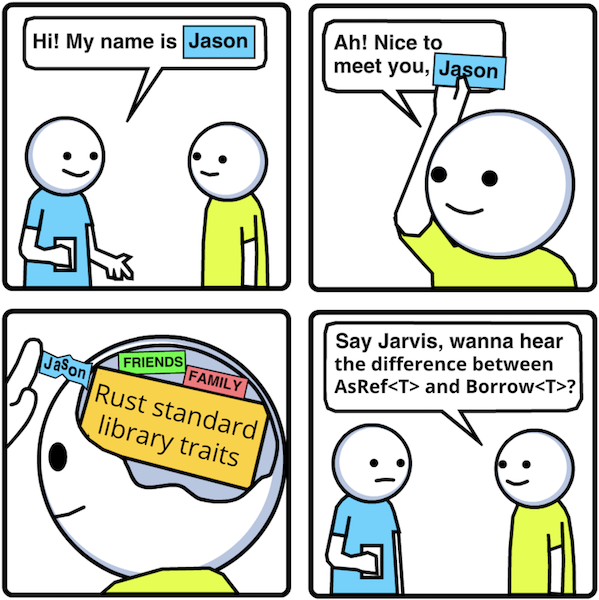

Intro
31 March 2021 · #rust · #traits
Have you ever wondered what's the difference between:
Deref<Target = T>,AsRef<T>, andBorrow<T>?Clone,Copy, andToOwned?From<T>andInto<T>?TryFrom<&str>andFromStr?FnOnce,FnMut,Fn, andfn?
Or ever asked yourself the questions:
- "When do I use associated types vs generic types in my trait?"
- "What are generic blanket impls?"
- "How do subtraits and supertraits work?"
- "Why does this trait not have any methods?"
Well then this is the article for you! It answers all of the above questions and much much more. Together we'll do a quick flyby tour of all of the most popular and commonly used traits from the Rust standard library!
You can read this article in order section by section or jump around to whichever traits interest you the most because each trait section begins with a list of links to Prerequisite sections that you should read to have adequate context to understand the current section's explanations.
Trait Basics
We'll cover just enough of the basics so that the rest of the article can be streamlined without having to repeat the same explanations of the same concepts over and over as they reappear in different traits.
Trait Items
Trait items are any items that are part of a trait declaration.
Self
Self always refers to the implementing type.
trait Trait {
// always returns i32
fn returns_num() -> i32;
// returns implementing type
fn returns_self() -> Self;
}
struct SomeType;
struct OtherType;
impl Trait for SomeType {
fn returns_num() -> i32 {
5
}
// Self == SomeType
fn returns_self() -> Self {
SomeType
}
}
impl Trait for OtherType {
fn returns_num() -> i32 {
6
}
// Self == OtherType
fn returns_self() -> Self {
OtherType
}
}
Functions
A trait function is any function whose first parameter does not use the self keyword.
trait Default {
// function
fn default() -> Self;
}
Trait functions can be called namespaced by the trait or implementing type:
fn main() {
let zero: i32 = Default::default();
let zero = i32::default();
}
Methods
A trait method is any function whose first parameter uses the self keyword and is of type Self, &Self, &mut Self. The former types can also be wrapped with a Box, Rc, Arc, or Pin.
trait Trait {
// methods
fn takes_self(self);
fn takes_immut_self(&self);
fn takes_mut_self(&mut self);
// above methods desugared
fn takes_self(self: Self);
fn takes_immut_self(self: &Self);
fn takes_mut_self(self: &mut Self);
}
// example from standard library
trait ToString {
fn to_string(&self) -> String;
}
Methods can be called using the dot operator on the implementing type:
fn main() {
let five = 5.to_string();
}
However, similarly to functions, they can also be called namespaced by the trait or implementing type:
fn main() {
let five = ToString::to_string(&5);
let five = i32::to_string(&5);
}
Associated Types
A trait can have associated types. This is useful when we need to use some type other than Self within function signatures but would still like the type to be chosen by the implementer rather than being hardcoded in the trait declaration:
trait Trait {
type AssociatedType;
fn func(arg: Self::AssociatedType);
}
struct SomeType;
struct OtherType;
// any type implementing Trait can
// choose the type of AssociatedType
impl Trait for SomeType {
type AssociatedType = i8; // chooses i8
fn func(arg: Self::AssociatedType) {}
}
impl Trait for OtherType {
type AssociatedType = u8; // chooses u8
fn func(arg: Self::AssociatedType) {}
}
fn main() {
SomeType::func(-1_i8); // can only call func with i8 on SomeType
OtherType::func(1_u8); // can only call func with u8 on OtherType
}
Generic Parameters
"Generic parameters" broadly refers to generic type parameters, generic lifetime parameters, and generic const parameters. Since all of those are a mouthful to say people commonly abbreviate them to "generic types", "lifetimes", and "generic consts". Since generic consts are not used in any of the standard library traits we'll be covering they're outside the scope of this article.
We can generalize a trait declaration using parameters:
// trait declaration generalized with lifetime & type parameters
trait Trait<'a, T> {
// signature uses generic type
fn func1(arg: T);
// signature uses lifetime
fn func2(arg: &'a i32);
// signature uses generic type & lifetime
fn func3(arg: &'a T);
}
struct SomeType;
impl<'a> Trait<'a, i8> for SomeType {
fn func1(arg: i8) {}
fn func2(arg: &'a i32) {}
fn func3(arg: &'a i8) {}
}
impl<'b> Trait<'b, u8> for SomeType {
fn func1(arg: u8) {}
fn func2(arg: &'b i32) {}
fn func3(arg: &'b u8) {}
}
It's possible to provide default values for generic types. The most commonly used default value is Self but any type works:
// make T = Self by default
trait Trait<T = Self> {
fn func(t: T) {}
}
// any type can be used as the default
trait Trait2<T = i32> {
fn func2(t: T) {}
}
struct SomeType;
// omitting the generic type will
// cause the impl to use the default
// value, which is Self here
impl Trait for SomeType {
fn func(t: SomeType) {}
}
// default value here is i32
impl Trait2 for SomeType {
fn func2(t: i32) {}
}
// the default is overridable as we'd expect
impl Trait<String> for SomeType {
fn func(t: String) {}
}
// overridable here too
impl Trait2<String> for SomeType {
fn func2(t: String) {}
}
Aside from parameterizing the trait it's also possible to parameterize individual functions and methods:
trait Trait {
fn func<'a, T>(t: &'a T);
}
Generic Types vs Associated Types
Both generic types and associated types defer the decision to the implementer on which concrete types should be used in the trait's functions and methods, so this section seeks to explain when to use one over the other.
The general rule-of-thumb is:
- Use associated types when there should only be a single impl of the trait per type.
- Use generic types when there can be many possible impls of the trait per type.
Let's say we want to define a trait called Add which allows us to add values together. Here's an initial design and impl that only uses associated types:
trait Add {
type Rhs;
type Output;
fn add(self, rhs: Self::Rhs) -> Self::Output;
}
struct Point {
x: i32,
y: i32,
}
impl Add for Point {
type Rhs = Point;
type Output = Point;
fn add(self, rhs: Point) -> Point {
Point {
x: self.x + rhs.x,
y: self.y + rhs.y,
}
}
}
fn main() {
let p1 = Point { x: 1, y: 1 };
let p2 = Point { x: 2, y: 2 };
let p3 = p1.add(p2);
assert_eq!(p3.x, 3);
assert_eq!(p3.y, 3);
}
Let's say we wanted to add the ability to add i32s to Points where the i32 would be added to both the x and y members:
trait Add {
type Rhs;
type Output;
fn add(self, rhs: Self::Rhs) -> Self::Output;
}
struct Point {
x: i32,
y: i32,
}
impl Add for Point {
type Rhs = Point;
type Output = Point;
fn add(self, rhs: Point) -> Point {
Point {
x: self.x + rhs.x,
y: self.y + rhs.y,
}
}
}
impl Add for Point { // ❌
type Rhs = i32;
type Output = Point;
fn add(self, rhs: i32) -> Point {
Point {
x: self.x + rhs,
y: self.y + rhs,
}
}
}
fn main() {
let p1 = Point { x: 1, y: 1 };
let p2 = Point { x: 2, y: 2 };
let p3 = p1.add(p2);
assert_eq!(p3.x, 3);
assert_eq!(p3.y, 3);
let p1 = Point { x: 1, y: 1 };
let int2 = 2;
let p3 = p1.add(int2); // ❌
assert_eq!(p3.x, 3);
assert_eq!(p3.y, 3);
}
Throws:
error[E0119]: conflicting implementations of trait `Add` for type `Point`:
--> src/main.rs:23:1
|
12 | impl Add for Point {
| ------------------ first implementation here
...
23 | impl Add for Point {
| ^^^^^^^^^^^^^^^^^^ conflicting implementation for `Point`
Since the Add trait is not parameterized by any generic types we can only impl it once per type, which means we can only pick the types for both Rhs and Output once! To allow adding both Pointss and i32s to Point we have to refactor Rhs from an associated type to a generic type, which would allow us to impl the trait multiple times for Point with different type arguments for Rhs:
trait Add<Rhs> {
type Output;
fn add(self, rhs: Rhs) -> Self::Output;
}
struct Point {
x: i32,
y: i32,
}
impl Add<Point> for Point {
type Output = Self;
fn add(self, rhs: Point) -> Self::Output {
Point {
x: self.x + rhs.x,
y: self.y + rhs.y,
}
}
}
impl Add<i32> for Point { // ✅
type Output = Self;
fn add(self, rhs: i32) -> Self::Output {
Point {
x: self.x + rhs,
y: self.y + rhs,
}
}
}
fn main() {
let p1 = Point { x: 1, y: 1 };
let p2 = Point { x: 2, y: 2 };
let p3 = p1.add(p2);
assert_eq!(p3.x, 3);
assert_eq!(p3.y, 3);
let p1 = Point { x: 1, y: 1 };
let int2 = 2;
let p3 = p1.add(int2); // ✅
assert_eq!(p3.x, 3);
assert_eq!(p3.y, 3);
}
Let's say we add a new type called Line which contains two Points, and now there are contexts within our program where adding two Points should produce a Line instead of a Point. This is not possible given the current design of the Add trait where Output is an associated type but we can satisfy these new requirements by refactoring Output from an associated type into a generic type:
trait Add<Rhs, Output> {
fn add(self, rhs: Rhs) -> Output;
}
struct Point {
x: i32,
y: i32,
}
impl Add<Point, Point> for Point {
fn add(self, rhs: Point) -> Point {
Point {
x: self.x + rhs.x,
y: self.y + rhs.y,
}
}
}
impl Add<i32, Point> for Point {
fn add(self, rhs: i32) -> Point {
Point {
x: self.x + rhs,
y: self.y + rhs,
}
}
}
struct Line {
start: Point,
end: Point,
}
impl Add<Point, Line> for Point { // ✅
fn add(self, rhs: Point) -> Line {
Line {
start: self,
end: rhs,
}
}
}
fn main() {
let p1 = Point { x: 1, y: 1 };
let p2 = Point { x: 2, y: 2 };
let p3: Point = p1.add(p2);
assert!(p3.x == 3 && p3.y == 3);
let p1 = Point { x: 1, y: 1 };
let int2 = 2;
let p3 = p1.add(int2);
assert!(p3.x == 3 && p3.y == 3);
let p1 = Point { x: 1, y: 1 };
let p2 = Point { x: 2, y: 2 };
let l: Line = p1.add(p2); // ✅
assert!(l.start.x == 1 && l.start.y == 1 && l.end.x == 2 && l.end.y == 2)
}
So which Add trait above is the best? It really depends on the requirements of your program! They're all good in the right situations.
Scope
Trait items cannot be used unless the trait is in scope. Most Rustaceans learn this the hard way the first time they try to write a program that does anything with I/O because the Read and Write traits are not in the standard library prelude:
use std::fs::File;
use std::io;
fn main() -> Result<(), io::Error> {
let mut file = File::open("Cargo.toml")?;
let mut buffer = String::new();
file.read_to_string(&mut buffer)?; // ❌ read_to_string not found in File
Ok(())
}
read_to_string(buf: &mut String) is declared by the std::io::Read trait and implemented by the std::fs::File struct but in order to call it std::io::Read must be in scope:
use std::fs::File;
use std::io;
use std::io::Read; // ✅
fn main() -> Result<(), io::Error> {
let mut file = File::open("Cargo.toml")?;
let mut buffer = String::new();
file.read_to_string(&mut buffer)?; // ✅
Ok(())
}
The standard library prelude is a module in the standard library, i.e. std::prelude::v1, that gets auto imported at the top of every other module, i.e. use std::prelude::v1::*. Thus the following traits are always in scope and we never have to explicitly import them ourselves because they're part of the prelude:
- AsMut
- AsRef
- Clone
- Copy
- Default
- Drop
- Eq
- Fn
- FnMut
- FnOnce
- From
- Into
- ToOwned
- IntoIterator
- Iterator
- PartialEq
- PartialOrd
- Send
- Sized
- Sync
- ToString
- Ord
Derive Macros
The standard library exports a handful of derive macros which we can use to quickly and conveniently impl a trait on a type if all of its members also impl the trait. The derive macros are named after the traits they impl:
Example usage:
// macro derives Copy & Clone impl for SomeType
#[derive(Copy, Clone)]
struct SomeType;
Note: derive macros are just procedural macros and can do anything, there's no hard rule that they must impl a trait or that they can only work if all the members of the type impl a trait, these are just the conventions followed by the derive macros in the standard library.
Default Impls
Traits can provide default impls for their functions and methods.
trait Trait {
fn method(&self) {
println!("default impl");
}
}
struct SomeType;
struct OtherType;
// use default impl for Trait::method
impl Trait for SomeType {}
impl Trait for OtherType {
// use our own impl for Trait::method
fn method(&self) {
println!("OtherType impl");
}
}
fn main() {
SomeType.method(); // prints "default impl"
OtherType.method(); // prints "OtherType impl"
}
This is especially handy if some of the trait methods can be implemented solely using other trait methods.
trait Greet {
fn greet(&self, name: &str) -> String;
fn greet_loudly(&self, name: &str) -> String {
self.greet(name) + "!"
}
}
struct Hello;
struct Hola;
impl Greet for Hello {
fn greet(&self, name: &str) -> String {
format!("Hello {}", name)
}
// use default impl for greet_loudly
}
impl Greet for Hola {
fn greet(&self, name: &str) -> String {
format!("Hola {}", name)
}
// override default impl
fn greet_loudly(&self, name: &str) -> String {
let mut greeting = self.greet(name);
greeting.insert_str(0, "¡");
greeting + "!"
}
}
fn main() {
println!("{}", Hello.greet("John")); // prints "Hello John"
println!("{}", Hello.greet_loudly("John")); // prints "Hello John!"
println!("{}", Hola.greet("John")); // prints "Hola John"
println!("{}", Hola.greet_loudly("John")); // prints "¡Hola John!"
}
Many traits in the standard library provide default impls for many of their methods.
Generic Blanket Impls
A generic blanket impl is an impl on a generic type instead of a concrete type. To explain why and how we'd use one let's start by writing an is_even method for number types:
trait Even {
fn is_even(self) -> bool;
}
impl Even for i8 {
fn is_even(self) -> bool {
self % 2_i8 == 0_i8
}
}
impl Even for u8 {
fn is_even(self) -> bool {
self % 2_u8 == 0_u8
}
}
impl Even for i16 {
fn is_even(self) -> bool {
self % 2_i16 == 0_i16
}
}
// etc
#[test] // ✅
fn test_is_even() {
assert!(2_i8.is_even());
assert!(4_u8.is_even());
assert!(6_i16.is_even());
// etc
}
Obviously, this is very verbose. Also, all of our impls are almost identical. Furthermore, in the unlikely but still possible event that Rust decides to add more number types in the future we have to remember to come back to this code and update it with the new number types. We can solve all these problems using a generic blanket impl:
use std::fmt::Debug;
use std::convert::TryInto;
use std::ops::Rem;
trait Even {
fn is_even(self) -> bool;
}
// generic blanket impl
impl<T> Even for T
where
T: Rem<Output = T> + PartialEq<T> + Sized,
u8: TryInto<T>,
<u8 as TryInto<T>>::Error: Debug,
{
fn is_even(self) -> bool {
// these unwraps will never panic
self % 2.try_into().unwrap() == 0.try_into().unwrap()
}
}
#[test] // ✅
fn test_is_even() {
assert!(2_i8.is_even());
assert!(4_u8.is_even());
assert!(6_i16.is_even());
// etc
}
Unlike default impls, which provide an impl, generic blanket impls provide the impl, so they are not overridable.
use std::fmt::Debug;
use std::convert::TryInto;
use std::ops::Rem;
trait Even {
fn is_even(self) -> bool;
}
impl<T> Even for T
where
T: Rem<Output = T> + PartialEq<T> + Sized,
u8: TryInto<T>,
<u8 as TryInto<T>>::Error: Debug,
{
fn is_even(self) -> bool {
self % 2.try_into().unwrap() == 0.try_into().unwrap()
}
}
impl Even for u8 { // ❌
fn is_even(self) -> bool {
self % 2_u8 == 0_u8
}
}
Throws:
error[E0119]: conflicting implementations of trait `Even` for type `u8`:
--> src/lib.rs:22:1
|
10 | / impl<T> Even for T
11 | | where
12 | | T: Rem<Output = T> + PartialEq<T> + Sized,
13 | | u8: TryInto<T>,
... |
19 | | }
20 | | }
| |_- first implementation here
21 |
22 | impl Even for u8 {
| ^^^^^^^^^^^^^^^^ conflicting implementation for `u8`
These impls overlap, hence they conflict, hence Rust rejects the code to ensure trait coherence. Trait coherence is the property that there exists at most one impl of a trait for any given type. The rules Rust uses to enforce trait coherence, the implications of those rules, and workarounds for the implications are outside the scope of this article.
Subtraits & Supertraits
The "sub" in "subtrait" refers to subset and the "super" in "supertrait" refers to superset. If we have this trait declaration:
trait Subtrait: Supertrait {}
All of the types which impl Subtrait are a subset of all the types which impl Supertrait, or to put it in opposite but equivalent terms: all the types which impl Supertrait are a superset of all the types which impl Subtrait.
Also, the above is just syntax sugar for:
trait Subtrait where Self: Supertrait {}
It's a subtle yet important distinction to understand that the bound is on Self, i.e. the type impling Subtrait, and not on Subtrait itself. The latter would not make any sense, since trait bounds can only be applied to concrete types which can impl traits. Traits cannot impl other traits:
trait Supertrait {
fn method(&self) {
println!("in supertrait");
}
}
trait Subtrait: Supertrait {
// this looks like it might impl or
// override Supertrait::method but it
// does not
fn method(&self) {
println!("in subtrait")
}
}
struct SomeType;
// adds Supertrait::method to SomeType
impl Supertrait for SomeType {}
// adds Subtrait::method to SomeType
impl Subtrait for SomeType {}
// both methods exist on SomeType simultaneously
// neither overriding or shadowing the other
fn main() {
SomeType.method(); // ❌ ambiguous method call
// must disambiguate using fully-qualified syntax
<SomeType as Supertrait>::method(&SomeType); // ✅ prints "in supertrait"
<SomeType as Subtrait>::method(&SomeType); // ✅ prints "in subtrait"
}
Furthermore, there are no rules for how a type must impl both a subtrait and a supertrait. It can use the methods from either in the impl of the other.
trait Supertrait {
fn super_method(&mut self);
}
trait Subtrait: Supertrait {
fn sub_method(&mut self);
}
struct CallSuperFromSub;
impl Supertrait for CallSuperFromSub {
fn super_method(&mut self) {
println!("in super");
}
}
impl Subtrait for CallSuperFromSub {
fn sub_method(&mut self) {
println!("in sub");
self.super_method();
}
}
struct CallSubFromSuper;
impl Supertrait for CallSubFromSuper {
fn super_method(&mut self) {
println!("in super");
self.sub_method();
}
}
impl Subtrait for CallSubFromSuper {
fn sub_method(&mut self) {
println!("in sub");
}
}
struct CallEachOther(bool);
impl Supertrait for CallEachOther {
fn super_method(&mut self) {
println!("in super");
if self.0 {
self.0 = false;
self.sub_method();
}
}
}
impl Subtrait for CallEachOther {
fn sub_method(&mut self) {
println!("in sub");
if self.0 {
self.0 = false;
self.super_method();
}
}
}
fn main() {
CallSuperFromSub.super_method(); // prints "in super"
CallSuperFromSub.sub_method(); // prints "in sub", "in super"
CallSubFromSuper.super_method(); // prints "in super", "in sub"
CallSubFromSuper.sub_method(); // prints "in sub"
CallEachOther(true).super_method(); // prints "in super", "in sub"
CallEachOther(true).sub_method(); // prints "in sub", "in super"
}
Hopefully the examples above show that the relationship between subtraits and supertraits can be complex. Before introducing a mental model that neatly encapsulates all of that complexity let's quickly review and establish the mental model we use for understanding trait bounds on generic types:
fn function<T: Clone>(t: T) {
// impl
}
Without knowing anything about the impl of this function we could reasonably guess that t.clone() gets called at some point because when a generic type is bounded by a trait that strongly implies it has a dependency on the trait. The mental model for understanding the relationship between generic types and their trait bounds is a simple and intuitive one: generic types depend on their trait bounds.
Now let's look the trait declaration for Copy:
trait Copy: Clone {}
The syntax above looks very similar to the syntax for applying a trait bound on a generic type and yet Copy doesn't depend on Clone at all. The mental model we developed earlier doesn't help us here. In my opinion, the most simple and elegant mental model for understanding the relationship between subtraits and supertraits is: subtraits refine their supertraits.
"Refinement" is intentionally kept somewhat vague because it can mean different things in different contexts:
- a subtrait might make its supertrait's methods' impls more specialized, faster, use less memory, e.g.
Copy: Clone - a subtrait might make additional guarantees about the supertrait's methods' impls, e.g.
Eq: PartialEq,Ord: PartialOrd,ExactSizeIterator: Iterator - a subtrait might make the supertrait's methods more flexible or easier to call, e.g.
FnMut: FnOnce,Fn: FnMut - a subtrait might extend a supertrait and add new methods, e.g.
DoubleEndedIterator: Iterator,ExactSizeIterator: Iterator
Trait Objects
Generics give us compile-time polymorphism where trait objects give us run-time polymorphism. We can use trait objects to allow functions to dynamically return different types at run-time:
fn example(condition: bool, vec: Vec<i32>) -> Box<dyn Iterator<Item = i32>> {
let iter = vec.into_iter();
if condition {
// Has type:
// Box<Map<IntoIter<i32>, Fn(i32) -> i32>>
// But is cast to:
// Box<dyn Iterator<Item = i32>>
Box::new(iter.map(|n| n * 2))
} else {
// Has type:
// Box<Filter<IntoIter<i32>, Fn(&i32) -> bool>>
// But is cast to:
// Box<dyn Iterator<Item = i32>>
Box::new(iter.filter(|&n| n >= 2))
}
}
Trait objects also allow us to store heterogeneous types in collections:
use std::f64::consts::PI;
struct Circle {
radius: f64,
}
struct Square {
side: f64
}
trait Shape {
fn area(&self) -> f64;
}
impl Shape for Circle {
fn area(&self) -> f64 {
PI * self.radius * self.radius
}
}
impl Shape for Square {
fn area(&self) -> f64 {
self.side * self.side
}
}
fn get_total_area(shapes: Vec<Box<dyn Shape>>) -> f64 {
shapes.into_iter().map(|s| s.area()).sum()
}
fn example() {
let shapes: Vec<Box<dyn Shape>> = vec![
Box::new(Circle { radius: 1.0 }), // Box<Circle> cast to Box<dyn Shape>
Box::new(Square { side: 1.0 }), // Box<Square> cast to Box<dyn Shape>
];
assert_eq!(PI + 1.0, get_total_area(shapes)); // ✅
}
Trait objects are unsized so they must always be behind a pointer. We can tell the difference between a concrete type and a trait object at the type level based on the presence of the dyn keyword within the type:
struct Struct;
trait Trait {}
// regular struct
&Struct
Box<Struct>
Rc<Struct>
Arc<Struct>
// trait objects
&dyn Trait
Box<dyn Trait>
Rc<dyn Trait>
Arc<dyn Trait>
Not all traits can be converted into trait objects. A trait is object-safe if it meets these requirements:
- trait doesn't require
Self: Sized - all of the trait's methods are object-safe
A trait method is object-safe if it meets these requirements:
- method requires
Self: Sizedor - method only uses a
Selftype in receiver position
Understanding why the requirements are what they are is not relevant to the rest of this article, but if you're still curious it's covered in Sizedness in Rust.
Marker Traits
Marker traits are traits that have no trait items. Their job is to "mark" the implementing type as having some property which is otherwise not possible to represent using the type system.
// Impling PartialEq for a type promises
// that equality for the type has these properties:
// - symmetry: a == b implies b == a, and
// - transitivity: a == b && b == c implies a == c
// But DOES NOT promise this property:
// - reflexivity: a == a
trait PartialEq {
fn eq(&self, other: &Self) -> bool;
}
// Eq has no trait items! The eq method is already
// declared by PartialEq, but "impling" Eq
// for a type promises this additional equality property:
// - reflexivity: a == a
trait Eq: PartialEq {}
// f64 impls PartialEq but not Eq because NaN != NaN
// i32 impls PartialEq & Eq because there's no NaNs :)
Auto Traits
Auto traits are traits that get automatically implemented for a type if all of its members also impl the trait. What "members" means depends on the type, for example: fields of a struct, variants of an enum, elements of an array, items of a tuple, and so on.
All auto traits are marker traits but not all marker traits are auto traits. Auto traits must be marker traits so the compiler can provide an automatic default impl for them, which would not be possible if they had any trait items.
Examples of auto traits:
// implemented for types which are safe to send between threads
unsafe auto trait Send {}
// implemented for types whose references are safe to send between threads
unsafe auto trait Sync {}
Unsafe Traits
Traits can be marked unsafe to indicate that impling the trait might require unsafe code. Both Send and Sync are marked unsafe because if they aren't automatically implemented for a type that means it must contains some non-Send or non-Sync member and we have to take extra care as the implementers to make sure there are no data races if we want to manually mark the type as Send and Sync.
// SomeType is not Send or Sync
struct SomeType {
not_send_or_sync: *const (),
}
// but if we're confident that our impl doesn't have any data
// races we can explicitly mark it as Send and Sync using unsafe
unsafe impl Send for SomeType {}
unsafe impl Sync for SomeType {}
Auto Traits
Let us dive into Send & Sync, Size next.
Send & Sync
Prerequisites
unsafe auto trait Send {}
unsafe auto trait Sync {}
If a type is Send that means it's safe to send between threads. If a type is Sync that means it's safe to share references of it between threads. In more precise terms some type T is Sync if and only if &T is Send.
Almost all types are Send and Sync. The only notable Send exception is Rc and the only notable Sync exceptions are Rc, Cell, RefCell. If we need a Send version of Rc we can use Arc. If we need a Sync version of Cell or RefCell we can Mutex or RwLock. Although if we're using the Mutex or RwLock to just wrap a primitive type it's often better to use the atomic primitive types provided by the standard library such as AtomicBool, AtomicI32, AtomicUsize, and so on.
That almost all types are Sync might be a surprise to some people, but yup, it's true even for types without any internal synchronization. This is possible thanks to Rust's strict borrowing rules.
We can pass many immutable references to the same data to many threads and we're guaranteed there are no data races because as long as any immutable references exist Rust statically guarantees the underlying data cannot be mutated:
use crossbeam::thread;
fn main() {
let mut greeting = String::from("Hello");
let greeting_ref = &greeting;
thread::scope(|scoped_thread| {
// spawn 3 threads
for n in 1..=3 {
// greeting_ref copied into every thread
scoped_thread.spawn(move |_| {
println!("{} {}", greeting_ref, n); // prints "Hello {n}"
});
}
// line below could cause UB or data races but compiler rejects it
greeting += " world"; // ❌ cannot mutate greeting while immutable refs exist
});
// can mutate greeting after every thread has joined
greeting += " world"; // ✅
println!("{}", greeting); // prints "Hello world"
}
Likewise we can pass a single mutable reference to some data to a single thread and we're guaranteed there will be no data races because Rust statically guarantees aliased mutable references cannot exist and the underlying data cannot be mutated through anything other than the single existing mutable reference:
use crossbeam::thread;
fn main() {
let mut greeting = String::from("Hello");
let greeting_ref = &mut greeting;
thread::scope(|scoped_thread| {
// greeting_ref moved into thread
scoped_thread.spawn(move |_| {
*greeting_ref += " world";
println!("{}", greeting_ref); // prints "Hello world"
});
// line below could cause UB or data races but compiler rejects it
greeting += "!!!"; // ❌ cannot mutate greeting while mutable refs exist
});
// can mutate greeting after the thread has joined
greeting += "!!!"; // ✅
println!("{}", greeting); // prints "Hello world!!!"
}
This is why most types are Sync without requiring any explicit synchronization. In the event we need to simultaneously mutate some data T across multiple threads the compiler won't let us until we wrap the data in a Arc<Mutex<T>> or Arc<RwLock<T>> so the compiler enforces that explicit synchronization is used when it's needed.
Sized
Prerequisites
If a type is Sized that means its size in bytes is known at compile-time and it's possible to put instances of the type on the stack.
Sizedness of types and its implications is a subtle yet huge topic that affects a lot of different aspects of the language. It's so important that I wrote an entire article on it called Sizedness in Rust which I highly recommend reading for anyone who would like to understand sizedness in-depth. I'll summarize a few key things which are relevant to this article.
- All generic types get an implicit
Sizedbound.
fn func<T>(t: &T) {}
// example above desugared
fn func<T: Sized>(t: &T) {}
- Since there's an implicit
Sizedbound on all generic types, if we want to opt-out of this implicit bound we need to use the special "relaxed bound" syntax?Sizedwhich currently only exists for theSizedtrait:
// now T can be unsized
fn func<T: ?Sized>(t: &T) {}
- There's an implicit
?Sizedbound on all traits.
trait Trait {}
// example above desugared
trait Trait: ?Sized {}
This is so that trait objects can impl the trait. Again, all of the nitty gritty details are in Sizedness in Rust. Do something: make link work
General Traits
Default, Clone, Copy Any is discussed herein.
Default
Prerequisites
trait Default {
fn default() -> Self;
}
It's possible to construct default values of Default types.
struct Color {
r: u8,
g: u8,
b: u8,
}
impl Default for Color {
// default color is black
fn default() -> Self {
Color {
r: 0,
g: 0,
b: 0,
}
}
}
This is useful for quick prototyping but also in any instance where we just need an instance of a type and aren't picky about what it is:
fn main() {
// just give me some color!
let color = Color::default();
}
This is also an option we may want to explicitly expose to the users of our functions:
struct Canvas;
enum Shape {
Circle,
Rectangle,
}
impl Canvas {
// let user optionally pass a color
fn paint(&mut self, shape: Shape, color: Option<Color>) {
// if no color is passed use the default color
let color = color.unwrap_or_default();
// etc
}
}
Default is also useful in generic contexts where we need to construct generic types:
fn guarantee_length<T: Default>(mut vec: Vec<T>, min_len: usize) -> Vec<T> {
for _ in 0..min_len.saturating_sub(vec.len()) {
vec.push(T::default());
}
vec
}
Another way we can take advantage of Default types is for partial initialization of structs using Rust's struct update syntax. We may have a new constructor for Color which takes every member as an argument:
impl Color {
fn new(r: u8, g: u8, b: u8) -> Self {
Color {
r,
g,
b,
}
}
}
However we can also have convenience constructors that only accept a particular struct member each and fall back to the default values for the other struct members:
impl Color {
fn red(r: u8) -> Self {
Color {
r,
..Color::default()
}
}
fn green(g: u8) -> Self {
Color {
g,
..Color::default()
}
}
fn blue(b: u8) -> Self {
Color {
b,
..Color::default()
}
}
}
There's also a Default derive macro for so we can write Color like this:
// default color is still black
// because u8::default() == 0
#[derive(Default)]
struct Color {
r: u8,
g: u8,
b: u8
}
Clone
Prerequisites
trait Clone {
fn clone(&self) -> Self;
// provided default impls
fn clone_from(&mut self, source: &Self);
}
We can convert immutable references of Clone types into owned values, i.e. &T -> T. Clone makes no promises about the efficiency of this conversion so it can be slow and expensive. To quickly impl Clone on a type we can use the derive macro:
#[derive(Clone)]
struct SomeType {
cloneable_member1: CloneableType1,
cloneable_member2: CloneableType2,
// etc
}
// macro generates impl below
impl Clone for SomeType {
fn clone(&self) -> Self {
SomeType {
cloneable_member1: self.cloneable_member1.clone(),
cloneable_member2: self.cloneable_member2.clone(),
// etc
}
}
}
Clone can also be useful in constructing instances of a type within a generic context. Here's a modified example from the previous section except using Clone instead of Default:
fn guarantee_length<T: Clone>(mut vec: Vec<T>, min_len: usize, fill_with: &T) -> Vec<T> {
for _ in 0..min_len.saturating_sub(vec.len()) {
vec.push(fill_with.clone());
}
vec
}
People also commonly use cloning as an escape hatch to avoid dealing with the borrow checker. Managing structs with references can be challenging, but we can turn the references into owned values by cloning them.
// oof, we gotta worry about lifetimes 😟
struct SomeStruct<'a> {
data: &'a Vec<u8>,
}
// now we're on easy street 😎
struct SomeStruct {
data: Vec<u8>,
}
If we're working on a program where performance is not the utmost concern then we don't need to sweat cloning data. Rust is a low-level language that exposes a lot of low-level details so it's easy to get caught up in premature optimizations instead of actually solving the problem at hand. For many programs the best order of priorities is usually to build for correctness first, elegance second, and performance third, and only focus on performance after the program has been profiled and the performance bottlenecks have been identified. This is good general advice to follow, and if it doesn't apply to your particular program then you would know.
Copy
Prerequisites
trait Copy: Clone {}
We copy Copy types, e.g. T -> T. Copy promises the copy operation will be a simple bitwise copy so it will be very fast and efficient. We cannot impl Copy ourselves, only the compiler can provide an impl, but we can tell it to do so by using the Copy derive macro, together with the Clone derive macro since Copy is a subtrait of Clone:
#[derive(Copy, Clone)]
struct SomeType;
Copy refines Clone. A clone may be slow and expensive but a copy is guaranteed to be fast and cheap, so a copy is just a fast clone. If a type impls Copy that makes the Clone impl trivial:
// this is what the derive macro generates
impl<T: Copy> Clone for T {
// the clone method becomes just a copy
fn clone(&self) -> Self {
*self
}
}
Impling Copy for a type changes its behavior when it gets moved. By default all types have move semantics but once a type impls Copy it gets copy semantics. To explain the difference between the two let's examine these simple scenarios:
// a "move", src: !Copy
let dest = src;
// a "copy", src: Copy
let dest = src;
In both cases, dest = src performs a simple bitwise copy of src's contents and moves the result into dest, the only difference is that in the case of "a move" the borrow checker invalidates the src variable and makes sure it's not used anywhere else later and in the case of "a copy" src remains valid and usable.
In a nutshell: Copies are moves. Moves are copies. The only difference is how they're treated by the borrow checker.
For a more concrete example of a move, imagine src was a Vec<i32> and its contents looked something like this:
{ data: *mut [i32], length: usize, capacity: usize }
When we write dest = src we end up with:
src = { data: *mut [i32], length: usize, capacity: usize }
dest = { data: *mut [i32], length: usize, capacity: usize }
At this point both src and dest have aliased mutable references to the same data, which is a big no-no, so the borrow checker invalidates the src variable so it can't be used again without throwing a compile error.
For a more concrete example of a copy, imagine src was an Option<i32> and its contents looked something like this:
{ is_valid: bool, data: i32 }
Now when we write dest = src we end up with:
src = { is_valid: bool, data: i32 }
dest = { is_valid: bool, data: i32 }
These are both usable simultaneously! Hence Option<i32> is Copy.
Although Copy could be an auto trait the Rust language designers decided it's simpler and safer for types to explicitly opt into copy semantics rather than silently inheriting copy semantics whenever the type is eligible, as the latter can cause surprising confusing behavior which often leads to bugs.
Any
Prerequisites
trait Any: 'static {
fn type_id(&self) -> TypeId;
}
Rust's style of polymorphism is parametric, but if we're looking to use a more ad-hoc style of polymorphism similar to dynamically-typed languages then we can emulate that using the Any trait. We don't have to manually impl this trait for our types because that's already covered by this generic blanket impl:
impl<T: 'static + ?Sized> Any for T {
fn type_id(&self) -> TypeId {
TypeId::of::<T>()
}
}
The way we get a T out of a dyn Any is by using the downcast_ref::<T>() and downcast_mut::<T>() methods:
use std::any::Any;
#[derive(Default)]
struct Point {
x: i32,
y: i32,
}
impl Point {
fn inc(&mut self) {
self.x += 1;
self.y += 1;
}
}
fn map_any(mut any: Box<dyn Any>) -> Box<dyn Any> {
if let Some(num) = any.downcast_mut::<i32>() {
*num += 1;
} else if let Some(string) = any.downcast_mut::<String>() {
*string += "!";
} else if let Some(point) = any.downcast_mut::<Point>() {
point.inc();
}
any
}
fn main() {
let mut vec: Vec<Box<dyn Any>> = vec![
Box::new(0),
Box::new(String::from("a")),
Box::new(Point::default()),
];
// vec = [0, "a", Point { x: 0, y: 0 }]
vec = vec.into_iter().map(map_any).collect();
// vec = [1, "a!", Point { x: 1, y: 1 }]
}
This trait rarely needs to be used because on top of parametric polymorphism being superior to ad-hoc polymorphism in most scenarios the latter can also be emulated using enums which are more type-safe and require less indirection. For example, we could have written the above example like this:
#[derive(Default)]
struct Point {
x: i32,
y: i32,
}
impl Point {
fn inc(&mut self) {
self.x += 1;
self.y += 1;
}
}
enum Stuff {
Integer(i32),
String(String),
Point(Point),
}
fn map_stuff(mut stuff: Stuff) -> Stuff {
match &mut stuff {
Stuff::Integer(num) => *num += 1,
Stuff::String(string) => *string += "!",
Stuff::Point(point) => point.inc(),
}
stuff
}
fn main() {
let mut vec = vec![
Stuff::Integer(0),
Stuff::String(String::from("a")),
Stuff::Point(Point::default()),
];
// vec = [0, "a", Point { x: 0, y: 0 }]
vec = vec.into_iter().map(map_stuff).collect();
// vec = [1, "a!", Point { x: 1, y: 1 }]
}
Despite Any rarely being needed it can still be convenient to use sometimes, as we'll later see in the Error Handling section.
Formating Traits
We can serialize types into strings using the formatting macros in std::fmt, the most well-known of the bunch being println!. We can pass formatting parameters to the {} placeholders used within format strs which are then used to select which trait impl to use to serialize the placeholder's argument.
| Trait | Placeholder | Description |
|---|---|---|
Display | {} | display representation |
Debug | {:?} | debug representation |
Octal | {:o} | octal representation |
LowerHex | {:x} | lowercase hex representation |
UpperHex | {:X} | uppercase hex representation |
Pointer | {:p} | memory address |
Binary | {:b} | binary representation |
LowerExp | {:e} | lowercase exponential representation |
UpperExp | {:E} | uppercase exponential representation |
Display & ToString
Prerequisites
trait Display {
fn fmt(&self, f: &mut Formatter<'_>) -> Result;
}
Display types can be serialized into Strings which are friendly to the end users of the program. Example impl for Point:
use std::fmt;
#[derive(Default)]
struct Point {
x: i32,
y: i32,
}
impl fmt::Display for Point {
fn fmt(&self, f: &mut fmt::Formatter<'_>) -> fmt::Result {
write!(f, "({}, {})", self.x, self.y)
}
}
fn main() {
println!("origin: {}", Point::default());
// prints "origin: (0, 0)"
// get Point's Display representation as a String
let stringified_point = format!("{}", Point::default());
assert_eq!("(0, 0)", stringified_point); // ✅
}
Aside from using the format! macro to get a type's display representation as a String we can use the ToString trait:
trait ToString {
fn to_string(&self) -> String;
}
There's no need for us to impl this ourselves. In fact we can't, because of this generic blanket impl that automatically impls ToString for any type which impls Display:
impl<T: Display + ?Sized> ToString for T;
Using ToString with Point:
#[test] // ✅
fn display_point() {
let origin = Point::default();
assert_eq!(format!("{}", origin), "(0, 0)");
}
#[test] // ✅
fn point_to_string() {
let origin = Point::default();
assert_eq!(origin.to_string(), "(0, 0)");
}
#[test] // ✅
fn display_equals_to_string() {
let origin = Point::default();
assert_eq!(format!("{}", origin), origin.to_string());
}
Debug
Prerequisites
trait Debug {
fn fmt(&self, f: &mut Formatter<'_>) -> Result;
}
Debug has an identical signature to Display. The only difference is that the Debug impl is called when we use the {:?} formatting specifier. Debug can be derived:
use std::fmt;
#[derive(Debug)]
struct Point {
x: i32,
y: i32,
}
// derive macro generates impl below
impl fmt::Debug for Point {
fn fmt(&self, f: &mut fmt::Formatter<'_>) -> fmt::Result {
f.debug_struct("Point")
.field("x", &self.x)
.field("y", &self.y)
.finish()
}
}
Impling Debug for a type also allows it to be used within the dbg! macro which is superior to println! for quick and dirty print logging. Some of its advantages:
dbg!prints to stderr instead of stdout so the debug logs are easy to separate from the actual stdout output of our program.dbg!prints the expression passed to it as well as the value the expression evaluated to.dbg!takes ownership of its arguments and returns them so you can use it within expressions:
fn some_condition() -> bool {
true
}
// no logging
fn example() {
if some_condition() {
// some code
}
}
// println! logging
fn example_println() {
// 🤦
let result = some_condition();
println!("{}", result); // just prints "true"
if result {
// some code
}
}
// dbg! logging
fn example_dbg() {
// 😍
if dbg!(some_condition()) { // prints "[src/main.rs:22] some_condition() = true"
// some code
}
}
The only downside is that dbg! isn't automatically stripped in release builds so we have to manually remove it from our code if we don't want to ship it in the final executable.
Operator Traits
All operators in Rust are associated with traits. If we'd like to impl operators for our types we have to impl the associated traits.
| Trait(s) | Category | Operator(s) | Description |
|---|---|---|---|
Eq, PartialEq | comparison | == | equality |
Ord, PartialOrd | comparison | <, >, <=, >= | comparison |
Add | arithmetic | + | addition |
AddAssign | arithmetic | += | addition assignment |
BitAnd | arithmetic | & | bitwise AND |
BitAndAssign | arithmetic | &= | bitwise assignment |
BitXor | arithmetic | ^ | bitwise XOR |
BitXorAssign | arithmetic | ^= | bitwise XOR assignment |
Div | arithmetic | / | division |
DivAssign | arithmetic | /= | division assignment |
Mul | arithmetic | * | multiplication |
MulAssign | arithmetic | *= | multiplication assignment |
Neg | arithmetic | - | unary negation |
Not | arithmetic | ! | unary logical negation |
Rem | arithmetic | % | remainder |
RemAssign | arithmetic | %= | remainder assignment |
Shl | arithmetic | << | left shift |
ShlAssign | arithmetic | <<= | left shift assignment |
Shr | arithmetic | >> | right shift |
ShrAssign | arithmetic | >>= | right shift assignment |
Sub | arithmetic | - | subtraction |
SubAssign | arithmetic | -= | subtraction assignment |
Fn | closure | (...args) | immutable closure invocation |
FnMut | closure | (...args) | mutable closure invocation |
FnOnce | closure | (...args) | one-time closure invocation |
Deref | other | * | immutable dereference |
DerefMut | other | * | mutable dereference |
Drop | other | - | type destructor |
Index | other | [] | immutable index |
IndexMut | other | [] | mutable index |
RangeBounds | other | .. | range |
Comparison Traits
| Trait(s) | Category | Operator(s) | Description |
|---|---|---|---|
Eq, PartialEq | comparison | == | equality |
Ord, PartialOrd | comparison | <, >, <=, >= | comparison |
PartialEq & Eq
Prerequisites
- Self
- Methods
- Generic Parameters
- Default Impls
- Generic Blanket Impls
- Marker Traits
- Subtraits & Supertraits
- Sized
trait PartialEq<Rhs = Self>
where
Rhs: ?Sized,
{
fn eq(&self, other: &Rhs) -> bool;
// provided default impls
fn ne(&self, other: &Rhs) -> bool;
}
PartialEq<Rhs> types can be checked for equality to Rhs types using the == operator.
All PartialEq<Rhs> impls must ensure that equality is symmetric and transitive. That means for all a, b, and c:
a == bimpliesb == a(symmetry)a == b && b == cimpliesa == c(transitivity)
By default Rhs = Self because we almost always want to compare instances of a type to each other, and not to instances of different types. This also automatically guarantees our impl is symmetric and transitive.
struct Point {
x: i32,
y: i32
}
// Rhs == Self == Point
impl PartialEq for Point {
// impl automatically symmetric & transitive
fn eq(&self, other: &Point) -> bool {
self.x == other.x && self.y == other.y
}
}
If all the members of a type impl PartialEq then it can be derived:
#[derive(PartialEq)]
struct Point {
x: i32,
y: i32
}
#[derive(PartialEq)]
enum Suit {
Spade,
Heart,
Club,
Diamond,
}
Once we impl PartialEq for our type we also get equality comparisons between references of our type for free thanks to these generic blanket impls:
// this impl only gives us: Point == Point
#[derive(PartialEq)]
struct Point {
x: i32,
y: i32
}
// all of the generic blanket impls below
// are provided by the standard library
// this impl gives us: &Point == &Point
impl<A, B> PartialEq<&'_ B> for &'_ A
where A: PartialEq<B> + ?Sized, B: ?Sized;
// this impl gives us: &mut Point == &Point
impl<A, B> PartialEq<&'_ B> for &'_ mut A
where A: PartialEq<B> + ?Sized, B: ?Sized;
// this impl gives us: &Point == &mut Point
impl<A, B> PartialEq<&'_ mut B> for &'_ A
where A: PartialEq<B> + ?Sized, B: ?Sized;
// this impl gives us: &mut Point == &mut Point
impl<A, B> PartialEq<&'_ mut B> for &'_ mut A
where A: PartialEq<B> + ?Sized, B: ?Sized;
Since this trait is generic we can define equality between different types. The standard library leverages this to allow checking equality between the many string-like types such as String, &str, PathBuf, &Path, OsString, &OsStr, and so on.
Generally, we should only impl equality between different types if they contain the same kind of data and the only difference between the types is how they represent the data or how they allow interacting with the data.
Here's a cute but bad example of how someone might be tempted to impl PartialEq to check equality between different types that don't meet the above criteria:
#[derive(PartialEq)]
enum Suit {
Spade,
Club,
Heart,
Diamond,
}
#[derive(PartialEq)]
enum Rank {
Ace,
Two,
Three,
Four,
Five,
Six,
Seven,
Eight,
Nine,
Ten,
Jack,
Queen,
King,
}
#[derive(PartialEq)]
struct Card {
suit: Suit,
rank: Rank,
}
// check equality of Card's suit
impl PartialEq<Suit> for Card {
fn eq(&self, other: &Suit) -> bool {
self.suit == *other
}
}
// check equality of Card's rank
impl PartialEq<Rank> for Card {
fn eq(&self, other: &Rank) -> bool {
self.rank == *other
}
}
fn main() {
let AceOfSpades = Card {
suit: Suit::Spade,
rank: Rank::Ace,
};
assert!(AceOfSpades == Suit::Spade); // ✅
assert!(AceOfSpades == Rank::Ace); // ✅
}
It works and kinda makes sense. A card which is an Ace of Spades is both an Ace and a Spade, and if we're writing a library to handle playing cards it's reasonable that we'd want to make it easy and convenient to individually check the suit and rank of a card. However, something's missing: symmetry! We can Card == Suit and Card == Rank but we cannot Suit == Card or Rank == Card so let's fix that:
// check equality of Card's suit
impl PartialEq<Suit> for Card {
fn eq(&self, other: &Suit) -> bool {
self.suit == *other
}
}
// added for symmetry
impl PartialEq<Card> for Suit {
fn eq(&self, other: &Card) -> bool {
*self == other.suit
}
}
// check equality of Card's rank
impl PartialEq<Rank> for Card {
fn eq(&self, other: &Rank) -> bool {
self.rank == *other
}
}
// added for symmetry
impl PartialEq<Card> for Rank {
fn eq(&self, other: &Card) -> bool {
*self == other.rank
}
}
We have symmetry! Great. Adding symmetry just broke transitivity! Oops. This is now possible:
fn main() {
// Ace of Spades
let a = Card {
suit: Suit::Spade,
rank: Rank::Ace,
};
let b = Suit::Spade;
// King of Spades
let c = Card {
suit: Suit::Spade,
rank: Rank::King,
};
assert!(a == b && b == c); // ✅
assert!(a == c); // ❌
}
A good example of impling PartialEq to check equality between different types would be a program that works with distances and uses different types to represent different units of measurement.
#[derive(PartialEq)]
struct Foot(u32);
#[derive(PartialEq)]
struct Yard(u32);
#[derive(PartialEq)]
struct Mile(u32);
impl PartialEq<Mile> for Foot {
fn eq(&self, other: &Mile) -> bool {
self.0 == other.0 * 5280
}
}
impl PartialEq<Foot> for Mile {
fn eq(&self, other: &Foot) -> bool {
self.0 * 5280 == other.0
}
}
impl PartialEq<Mile> for Yard {
fn eq(&self, other: &Mile) -> bool {
self.0 == other.0 * 1760
}
}
impl PartialEq<Yard> for Mile {
fn eq(&self, other: &Yard) -> bool {
self.0 * 1760 == other.0
}
}
impl PartialEq<Foot> for Yard {
fn eq(&self, other: &Foot) -> bool {
self.0 * 3 == other.0
}
}
impl PartialEq<Yard> for Foot {
fn eq(&self, other: &Yard) -> bool {
self.0 == other.0 * 3
}
}
fn main() {
let a = Foot(5280);
let b = Yard(1760);
let c = Mile(1);
// symmetry
assert!(a == b && b == a); // ✅
assert!(b == c && c == b); // ✅
assert!(a == c && c == a); // ✅
// transitivity
assert!(a == b && b == c && a == c); // ✅
assert!(c == b && b == a && c == a); // ✅
}
Eq is a marker trait and a subtrait of PartialEq<Self>.
trait Eq: PartialEq<Self> {}
If we impl Eq for a type, on top of the symmetry & transitivity properties required by PartialEq, we're also guaranteeing reflexivity, i.e. a == a for all a. In this sense Eq refines PartialEq because it represents a stricter version of equality. If all members of a type impl Eq then the Eq impl can be derived for the type.
Floats are PartialEq but not Eq because NaN != NaN. Almost all other PartialEq types are trivially Eq, unless of course if they contain floats.
Once a type impls PartialEq and Debug we can use it in the assert_eq! macro. We can also compare collections of PartialEq types.
#[derive(PartialEq, Debug)]
struct Point {
x: i32,
y: i32,
}
fn example_assert(p1: Point, p2: Point) {
assert_eq!(p1, p2);
}
fn example_compare_collections<T: PartialEq>(vec1: Vec<T>, vec2: Vec<T>) {
// if T: PartialEq this now works!
if vec1 == vec2 {
// some code
} else {
// other code
}
}
Hash
Prerequisites
trait Hash {
fn hash<H: Hasher>(&self, state: &mut H);
// provided default impls
fn hash_slice<H: Hasher>(data: &[Self], state: &mut H);
}
This trait is not associated with any operator, but the best time to talk about it is right after PartialEq & Eq so here it is. Hash types can be hashed using a Hasher.
use std::hash::Hasher;
use std::hash::Hash;
struct Point {
x: i32,
y: i32,
}
impl Hash for Point {
fn hash<H: Hasher>(&self, hasher: &mut H) {
hasher.write_i32(self.x);
hasher.write_i32(self.y);
}
}
There's a derive macro which generates the same impl as above:
#[derive(Hash)]
struct Point {
x: i32,
y: i32,
}
If a type impls both Hash and Eq those impls must agree with each other such that for all a and b if a == b then a.hash() == b.hash(). So we should always use the derive macro to impl both or manually impl both, but not mix the two, otherwise we risk breaking the above invariant.
The main benefit of impling Eq and Hash for a type is that it allows us to store that type as keys in HashMaps and HashSets.
use std::collections::HashSet;
// now our type can be stored
// in HashSets and HashMaps!
#[derive(PartialEq, Eq, Hash)]
struct Point {
x: i32,
y: i32,
}
fn example_hashset() {
let mut points = HashSet::new();
points.insert(Point { x: 0, y: 0 }); // ✅
}
PartialOrd & Ord
Prerequisites
- Self
- Methods
- Generic Parameters
- Default Impls
- Subtraits & Supertraits
- Derive Macros
- Sized
- PartialEq & Eq
enum Ordering {
Less,
Equal,
Greater,
}
trait PartialOrd<Rhs = Self>: PartialEq<Rhs>
where
Rhs: ?Sized,
{
fn partial_cmp(&self, other: &Rhs) -> Option<Ordering>;
// provided default impls
fn lt(&self, other: &Rhs) -> bool;
fn le(&self, other: &Rhs) -> bool;
fn gt(&self, other: &Rhs) -> bool;
fn ge(&self, other: &Rhs) -> bool;
}
PartialOrd<Rhs> types can be compared to Rhs types using the <, <=, >, and >= operators.
All PartialOrd impls must ensure that comparisons are asymmetric and transitive. That means for all a, b, and c:
a < bimplies!(a > b)(asymmetry)a < b && b < cimpliesa < c(transitivity)
PartialOrd is a subtrait of PartialEq and their impls must always agree with each other.
fn must_always_agree<T: PartialOrd + PartialEq>(t1: T, t2: T) {
assert_eq!(t1.partial_cmp(&t2) == Some(Ordering::Equal), t1 == t2);
}
PartialOrd refines PartialEq in the sense that when comparing PartialEq types we can check if they are equal or not equal, but when comparing PartialOrd types we can check if they are equal or not equal, and if they are not equal we can check if they are unequal because the first item is less than or greater than the second item.
By default Rhs = Self because we almost always want to compare instances of a type to each other, and not to instances of different types. This also automatically guarantees our impl is symmetric and transitive.
use std::cmp::Ordering;
#[derive(PartialEq, PartialOrd)]
struct Point {
x: i32,
y: i32
}
// Rhs == Self == Point
impl PartialOrd for Point {
// impl automatically symmetric & transitive
fn partial_cmp(&self, other: &Point) -> Option<Ordering> {
Some(match self.x.cmp(&other.x) {
Ordering::Equal => self.y.cmp(&other.y),
ordering => ordering,
})
}
}
If all the members of a type impl PartialOrd then it can be derived:
#[derive(PartialEq, PartialOrd)]
struct Point {
x: i32,
y: i32,
}
#[derive(PartialEq, PartialOrd)]
enum Stoplight {
Red,
Yellow,
Green,
}
The PartialOrd derive macro orders types based on the lexicographical order of their members:
// generates PartialOrd impl which orders
// Points based on x member first and
// y member second because that's the order
// they appear in the source code
#[derive(PartialOrd, PartialEq)]
struct Point {
x: i32,
y: i32,
}
// generates DIFFERENT PartialOrd impl
// which orders Points based on y member
// first and x member second
#[derive(PartialOrd, PartialEq)]
struct Point {
y: i32,
x: i32,
}
Ord is a subtrait of Eq and PartialOrd<Self>:
trait Ord: Eq + PartialOrd<Self> {
fn cmp(&self, other: &Self) -> Ordering;
// provided default impls
fn max(self, other: Self) -> Self;
fn min(self, other: Self) -> Self;
fn clamp(self, min: Self, max: Self) -> Self;
}
If we impl Ord for a type, on top of the asymmetry & transitivity properties required by PartialOrd, we're also guaranteeing that the asymmetry is total, i.e. exactly one of a < b, a == b or a > b is true for any given a and b. In this sense Ord refines Eq and PartialOrd because it represents a stricter version of comparisons. If a type impls Ord we can use that impl to trivially impl PartialOrd, PartialEq, and Eq:
use std::cmp::Ordering;
// of course we can use the derive macros here
#[derive(Ord, PartialOrd, Eq, PartialEq)]
struct Point {
x: i32,
y: i32,
}
// note: as with PartialOrd, the Ord derive macro
// orders a type based on the lexicographical order
// of its members
// but here's the impls if we wrote them out by hand
impl Ord for Point {
fn cmp(&self, other: &Self) -> Ordering {
match self.x.cmp(&other.x) {
Ordering::Equal => self.y.cmp(&other.y),
ordering => ordering,
}
}
}
impl PartialOrd for Point {
fn partial_cmp(&self, other: &Self) -> Option<Ordering> {
Some(self.cmp(other))
}
}
impl PartialEq for Point {
fn eq(&self, other: &Self) -> bool {
self.cmp(other) == Ordering::Equal
}
}
impl Eq for Point {}
Floats impl PartialOrd but not Ord because both NaN < 0 == false and NaN >= 0 == false are simultaneously true. Almost all other PartialOrd types are trivially Ord, unless of course if they contain floats.
Once a type impls Ord we can store it in BTreeMaps and BTreeSets as well as easily sort it using the sort() method on slices and any types which deref to slices such as arrays, Vecs, and VecDeques.
use std::collections::BTreeSet;
// now our type can be stored
// in BTreeSets and BTreeMaps!
#[derive(Ord, PartialOrd, PartialEq, Eq)]
struct Point {
x: i32,
y: i32,
}
fn example_btreeset() {
let mut points = BTreeSet::new();
points.insert(Point { x: 0, y: 0 }); // ✅
}
// we can also .sort() Ord types in collections!
fn example_sort<T: Ord>(mut sortable: Vec<T>) -> Vec<T> {
sortable.sort();
sortable
}
Arithmetic Traits
| Trait(s) | Category | Operator(s) | Description |
|---|---|---|---|
Add | arithmetic | + | addition |
AddAssign | arithmetic | += | addition assignment |
BitAnd | arithmetic | & | bitwise AND |
BitAndAssign | arithmetic | &= | bitwise assignment |
BitXor | arithmetic | ^ | bitwise XOR |
BitXorAssign | arithmetic | ^= | bitwise XOR assignment |
Div | arithmetic | / | division |
DivAssign | arithmetic | /= | division assignment |
Mul | arithmetic | * | multiplication |
MulAssign | arithmetic | *= | multiplication assignment |
Neg | arithmetic | - | unary negation |
Not | arithmetic | ! | unary logical negation |
Rem | arithmetic | % | remainder |
RemAssign | arithmetic | %= | remainder assignment |
Shl | arithmetic | << | left shift |
ShlAssign | arithmetic | <<= | left shift assignment |
Shr | arithmetic | >> | right shift |
ShrAssign | arithmetic | >>= | right shift assignment |
Sub | arithmetic | - | subtraction |
SubAssign | arithmetic | -= | subtraction assignment |
Going over all of these would be very redundant. Most of these only apply to number types anyway. We'll only go over Add and AddAssign since the + operator is commonly overloaded to do other stuff like adding items to collections or concatenating things together, that way we cover the most interesting ground and don't repeat ourselves.
Add & AddAssign
Prerequisites
trait Add<Rhs = Self> {
type Output;
fn add(self, rhs: Rhs) -> Self::Output;
}
Add<Rhs, Output = T> types can be added to Rhs types and will produce T as output.
Example Add<Point, Output = Point> impl for Point:
#[derive(Clone, Copy)]
struct Point {
x: i32,
y: i32,
}
impl Add for Point {
type Output = Point;
fn add(self, rhs: Point) -> Point {
Point {
x: self.x + rhs.x,
y: self.y + rhs.y,
}
}
}
fn main() {
let p1 = Point { x: 1, y: 2 };
let p2 = Point { x: 3, y: 4 };
let p3 = p1 + p2;
assert_eq!(p3.x, p1.x + p2.x); // ✅
assert_eq!(p3.y, p1.y + p2.y); // ✅
}
But what if we only had references to Points? Can we still add them then? Let's try:
fn main() {
let p1 = Point { x: 1, y: 2 };
let p2 = Point { x: 3, y: 4 };
let p3 = &p1 + &p2; // ❌
}
Unfortunately not. The compiler throws:
error[E0369]: cannot add `&Point` to `&Point`
--> src/main.rs:50:25
|
50 | let p3: Point = &p1 + &p2;
| --- ^ --- &Point
| |
| &Point
|
= note: an implementation of `std::ops::Add` might be missing for `&Point`
Within Rust's type system, for some type T, the types T, &T, and &mut T are all treated as unique distinct types which means we have to provide trait impls for each of them separately. Let's define an Add impl for &Point:
impl Add for &Point {
type Output = Point;
fn add(self, rhs: &Point) -> Point {
Point {
x: self.x + rhs.x,
y: self.y + rhs.y,
}
}
}
fn main() {
let p1 = Point { x: 1, y: 2 };
let p2 = Point { x: 3, y: 4 };
let p3 = &p1 + &p2; // ✅
assert_eq!(p3.x, p1.x + p2.x); // ✅
assert_eq!(p3.y, p1.y + p2.y); // ✅
}
However, something still doesn't feel quite right. We have two separate impls of Add for Point and &Point and they happen to do the same thing currently but there's no guarantee that they will in the future! For example, let's say we decide that when we add two Points together we want to create a Line containing those two Points instead of creating a new Point, we'd update our Add impl like this:
use std::ops::Add;
#[derive(Copy, Clone)]
struct Point {
x: i32,
y: i32,
}
#[derive(Copy, Clone)]
struct Line {
start: Point,
end: Point,
}
// we updated this impl
impl Add for Point {
type Output = Line;
fn add(self, rhs: Point) -> Line {
Line {
start: self,
end: rhs,
}
}
}
// but forgot to update this impl, uh oh!
impl Add for &Point {
type Output = Point;
fn add(self, rhs: &Point) -> Point {
Point {
x: self.x + rhs.x,
y: self.y + rhs.y,
}
}
}
fn main() {
let p1 = Point { x: 1, y: 2 };
let p2 = Point { x: 3, y: 4 };
let line: Line = p1 + p2; // ✅
let p1 = Point { x: 1, y: 2 };
let p2 = Point { x: 3, y: 4 };
let line: Line = &p1 + &p2; // ❌ expected Line, found Point
}
Our current impl of Add for &Point creates an unnecessary maintenance burden, we want the impl to match Point's impl without having to manually update it every time we change Point's impl. We'd like to keep our code as DRY (Don't Repeat Yourself) as possible. Luckily this is achievable:
// updated, DRY impl
impl Add for &Point {
type Output = <Point as Add>::Output;
fn add(self, rhs: &Point) -> Self::Output {
Point::add(*self, *rhs)
}
}
fn main() {
let p1 = Point { x: 1, y: 2 };
let p2 = Point { x: 3, y: 4 };
let line: Line = p1 + p2; // ✅
let p1 = Point { x: 1, y: 2 };
let p2 = Point { x: 3, y: 4 };
let line: Line = &p1 + &p2; // ✅
}
AddAssign<Rhs> types allow us to add + assign Rhs types to them. The trait declaration:
trait AddAssign<Rhs = Self> {
fn add_assign(&mut self, rhs: Rhs);
}
Example impls for Point and &Point:
use std::ops::AddAssign;
#[derive(Copy, Clone)]
struct Point {
x: i32,
y: i32
}
impl AddAssign for Point {
fn add_assign(&mut self, rhs: Point) {
self.x += rhs.x;
self.y += rhs.y;
}
}
impl AddAssign<&Point> for Point {
fn add_assign(&mut self, rhs: &Point) {
Point::add_assign(self, *rhs);
}
}
fn main() {
let mut p1 = Point { x: 1, y: 2 };
let p2 = Point { x: 3, y: 4 };
p1 += &p2;
p1 += p2;
assert!(p1.x == 7 && p1.y == 10);
}
Closure Traits
| Trait(s) | Category | Operator(s) | Description |
|---|---|---|---|
Fn | closure | (...args) | immutable closure invocation |
FnMut | closure | (...args) | mutable closure invocation |
FnOnce | closure | (...args) | one-time closure invocation |
FnOnce, FnMut, & Fn
Prerequisites
- Self
- Methods
- Associated Types
- Generic Parameters
- Generic Types vs Associated Types
- Subtraits & Supertraits
trait FnOnce<Args> {
type Output;
fn call_once(self, args: Args) -> Self::Output;
}
trait FnMut<Args>: FnOnce<Args> {
fn call_mut(&mut self, args: Args) -> Self::Output;
}
trait Fn<Args>: FnMut<Args> {
fn call(&self, args: Args) -> Self::Output;
}
Although these traits exist it's not possible to impl them for our own types in stable Rust. The only types we can create which impl these traits are closures. Depending on what the closure captures from its environment determines whether it impls FnOnce, FnMut, or Fn.
An FnOnce closure can only be called once because it consumes some value as part of its execution:
fn main() {
let range = 0..10;
let get_range_count = || range.count();
assert_eq!(get_range_count(), 10); // ✅
get_range_count(); // ❌
}
The .count() method on iterators consumes the iterator so it can only be called once. Hence our closure can only be called once. Which is why when we try to call it a second time we get this error:
error[E0382]: use of moved value: `get_range_count`
--> src/main.rs:5:5
|
4 | assert_eq!(get_range_count(), 10);
| ----------------- `get_range_count` moved due to this call
5 | get_range_count();
| ^^^^^^^^^^^^^^^ value used here after move
|
note: closure cannot be invoked more than once because it moves the variable `range` out of its environment
--> src/main.rs:3:30
|
3 | let get_range_count = || range.count();
| ^^^^^
note: this value implements `FnOnce`, which causes it to be moved when called
--> src/main.rs:4:16
|
4 | assert_eq!(get_range_count(), 10);
| ^^^^^^^^^^^^^^^
An FnMut closure can be called multiple times and can also mutate variables it has captured from its environment. We might say FnMut closures perform side-effects or are stateful. Here's an example of a closure that filters out all non-ascending values from an iterator by keeping track of the smallest value it has seen so far:
fn main() {
let nums = vec![0, 4, 2, 8, 10, 7, 15, 18, 13];
let mut min = i32::MIN;
let ascending = nums.into_iter().filter(|&n| {
if n <= min {
false
} else {
min = n;
true
}
}).collect::<Vec<_>>();
assert_eq!(vec![0, 4, 8, 10, 15, 18], ascending); // ✅
}
FnMut refines FnOnce in the sense that FnOnce requires taking ownership of its arguments and can only be called once, but FnMut requires only taking mutable references and can be called multiple times. FnMut can be used anywhere FnOnce can be used.
An Fn closure can be called multiple times and does not mutate any variables it has captured from its environment. We might say Fn closures have no side-effects or are stateless. Here's an example closure that filters out all values less than some stack variable it captures from its environment from an iterator:
fn main() {
let nums = vec![0, 4, 2, 8, 10, 7, 15, 18, 13];
let min = 9;
let greater_than_9 = nums.into_iter().filter(|&n| n > min).collect::<Vec<_>>();
assert_eq!(vec![10, 15, 18, 13], greater_than_9); // ✅
}
Fn refines FnMut in the sense that FnMut requires mutable references and can be called multiple times, but Fn only requires immutable references and can be called multiple times. Fn can be used anywhere FnMut can be used, which includes anywhere FnOnce can be used.
If a closure doesn't capture anything from its environment it's technically not a closure, but just an anonymously declared inline function, and can be casted to, used, and passed around as a regular function pointer, i.e. fn. Function pointers can be used anywhere Fn can be used, which includes anwhere FnMut and FnOnce can be used.
fn add_one(x: i32) -> i32 {
x + 1
}
fn main() {
let mut fn_ptr: fn(i32) -> i32 = add_one;
assert_eq!(fn_ptr(1), 2); // ✅
// capture-less closure cast to fn pointer
fn_ptr = |x| x + 1; // same as add_one
assert_eq!(fn_ptr(1), 2); // ✅
}
Example of passing a regular function pointer in place of a closure:
fn main() {
let nums = vec![-1, 1, -2, 2, -3, 3];
let absolutes: Vec<i32> = nums.into_iter().map(i32::abs).collect();
assert_eq!(vec![1, 1, 2, 2, 3, 3], absolutes); // ✅
}
Other Traits
| Trait(s) | Category | Operator(s) | Description |
|---|---|---|---|
Deref | other | * | immutable dereference |
DerefMut | other | * | mutable dereference |
Drop | other | - | type destructor |
Index | other | [] | immutable index |
IndexMut | other | [] | mutable index |
RangeBounds | other | .. | range |
Deref & DerefMut
Prerequisites
trait Deref {
type Target: ?Sized;
fn deref(&self) -> &Self::Target;
}
trait DerefMut: Deref {
fn deref_mut(&mut self) -> &mut Self::Target;
}
Deref<Target = T> types can be dereferenced to T types using the dereference operator *. This has obvious use-cases for smart pointer types like Box and Rc. However, we rarely see the dereference operator explicitly used in Rust code, and that's because of a Rust feature called deref coercion.
Rust automatically dereferences types when they're being passed as function arguments, returned from a function, or used as part of a method call. This is the reason why we can pass &String and &Vec<T> to functions expecting &str and &[T] because String impls Deref<Target = str> and Vec<T> impls Deref<Target = [T]>.
Deref and DerefMut should only be implemented for smart pointer types. The most common way people attempt to misuse and abuse these traits is to try to shoehorn some kind of OOP-style data inheritance into Rust. This does not work. Rust is not OOP. Let's examine a few different situations where, how, and why it does not work. Let's start with this example:
use std::ops::Deref;
struct Human {
health_points: u32,
}
enum Weapon {
Spear,
Axe,
Sword,
}
// a Soldier is just a Human with a Weapon
struct Soldier {
human: Human,
weapon: Weapon,
}
impl Deref for Soldier {
type Target = Human;
fn deref(&self) -> &Human {
&self.human
}
}
enum Mount {
Horse,
Donkey,
Cow,
}
// a Knight is just a Soldier with a Mount
struct Knight {
soldier: Soldier,
mount: Mount,
}
impl Deref for Knight {
type Target = Soldier;
fn deref(&self) -> &Soldier {
&self.soldier
}
}
enum Spell {
MagicMissile,
FireBolt,
ThornWhip,
}
// a Mage is just a Human who can cast Spells
struct Mage {
human: Human,
spells: Vec<Spell>,
}
impl Deref for Mage {
type Target = Human;
fn deref(&self) -> &Human {
&self.human
}
}
enum Staff {
Wooden,
Metallic,
Plastic,
}
// a Wizard is just a Mage with a Staff
struct Wizard {
mage: Mage,
staff: Staff,
}
impl Deref for Wizard {
type Target = Mage;
fn deref(&self) -> &Mage {
&self.mage
}
}
fn borrows_human(human: &Human) {}
fn borrows_soldier(soldier: &Soldier) {}
fn borrows_knight(knight: &Knight) {}
fn borrows_mage(mage: &Mage) {}
fn borrows_wizard(wizard: &Wizard) {}
fn example(human: Human, soldier: Soldier, knight: Knight, mage: Mage, wizard: Wizard) {
// all types can be used as Humans
borrows_human(&human);
borrows_human(&soldier);
borrows_human(&knight);
borrows_human(&mage);
borrows_human(&wizard);
// Knights can be used as Soldiers
borrows_soldier(&soldier);
borrows_soldier(&knight);
// Wizards can be used as Mages
borrows_mage(&mage);
borrows_mage(&wizard);
// Knights & Wizards passed as themselves
borrows_knight(&knight);
borrows_wizard(&wizard);
}
So at first glance the above looks pretty good! However it quickly breaks down to scrutiny. First of all, deref coercion only works on references, so it doesn't work when we actually want to pass ownership:
fn takes_human(human: Human) {}
fn example(human: Human, soldier: Soldier, knight: Knight, mage: Mage, wizard: Wizard) {
// all types CANNOT be used as Humans
takes_human(human);
takes_human(soldier); // ❌
takes_human(knight); // ❌
takes_human(mage); // ❌
takes_human(wizard); // ❌
}
Furthermore, deref coercion doesn't work in generic contexts. Let's say we impl some trait only on humans:
trait Rest {
fn rest(&self);
}
impl Rest for Human {
fn rest(&self) {}
}
fn take_rest<T: Rest>(rester: &T) {
rester.rest()
}
fn example(human: Human, soldier: Soldier, knight: Knight, mage: Mage, wizard: Wizard) {
// all types CANNOT be used as Rest types, only Human
take_rest(&human);
take_rest(&soldier); // ❌
take_rest(&knight); // ❌
take_rest(&mage); // ❌
take_rest(&wizard); // ❌
}
Also, although deref coercion works in a lot of places it doesn't work everywhere. It doesn't work on operands, even though operators are just syntax sugar for method calls. Let's say, to be cute, we wanted Mages to learn Spells using the += operator:
impl DerefMut for Wizard {
fn deref_mut(&mut self) -> &mut Mage {
&mut self.mage
}
}
impl AddAssign<Spell> for Mage {
fn add_assign(&mut self, spell: Spell) {
self.spells.push(spell);
}
}
fn example(mut mage: Mage, mut wizard: Wizard, spell: Spell) {
mage += spell;
wizard += spell; // ❌ wizard not coerced to mage here
wizard.add_assign(spell); // oof, we have to call it like this 🤦
}
In languages with OOP-style data inheritance the value of self within a method is always equal to the type which called the method but in the case of Rust the value of self is always equal to the type which implemented the method:
struct Human {
profession: &'static str,
health_points: u32,
}
impl Human {
// self will always be a Human here, even if we call it on a Soldier
fn state_profession(&self) {
println!("I'm a {}!", self.profession);
}
}
struct Soldier {
profession: &'static str,
human: Human,
weapon: Weapon,
}
fn example(soldier: &Soldier) {
assert_eq!("servant", soldier.human.profession);
assert_eq!("spearman", soldier.profession);
soldier.human.state_profession(); // prints "I'm a servant!"
soldier.state_profession(); // still prints "I'm a servant!" 🤦
}
The above gotcha is especially damning when impling Deref or DerefMut on a newtype. Let's say we want to create a SortedVec type which is just a Vec but it's always in sorted order. Here's how we might do that:
struct SortedVec<T: Ord>(Vec<T>);
impl<T: Ord> SortedVec<T> {
fn new(mut vec: Vec<T>) -> Self {
vec.sort();
SortedVec(vec)
}
fn push(&mut self, t: T) {
self.0.push(t);
self.0.sort();
}
}
Obviously we cannot impl DerefMut<Target = Vec<T>> here or anyone using SortedVec would be able to trivially break the sorted order. However, impling Deref<Target = Vec<T>> surely must be safe, right? Try to spot the bug in the program below:
use std::ops::Deref;
struct SortedVec<T: Ord>(Vec<T>);
impl<T: Ord> SortedVec<T> {
fn new(mut vec: Vec<T>) -> Self {
vec.sort();
SortedVec(vec)
}
fn push(&mut self, t: T) {
self.0.push(t);
self.0.sort();
}
}
impl<T: Ord> Deref for SortedVec<T> {
type Target = Vec<T>;
fn deref(&self) -> &Vec<T> {
&self.0
}
}
fn main() {
let sorted = SortedVec::new(vec![2, 8, 6, 3]);
sorted.push(1);
let sortedClone = sorted.clone();
sortedClone.push(4);
}
We never implemented Clone for SortedVec so when we call the .clone() method the compiler is using deref coercion to resolve that method call on Vec and so it returns a Vec and not a SortedVec!
fn main() {
let sorted: SortedVec<i32> = SortedVec::new(vec![2, 8, 6, 3]);
sorted.push(1); // still sorted
// calling clone on SortedVec actually returns a Vec 🤦
let sortedClone: Vec<i32> = sorted.clone();
sortedClone.push(4); // sortedClone no longer sorted 💀
}
Anyway, none of the above limitations, constraints, or gotchas are faults of Rust because Rust was never designed to be an OO language or to support any OOP patterns in the first place.
The main takeaway from this section is do not try to be cute or clever with Deref and DerefMut impls. They're really only appropriate for smart pointer types, which can only be implemented within the standard library for now as smart pointer types currently require unstable features and compiler magic to work. If we want functionality and behavior similar to Deref and DerefMut then what we're actually probably looking for is AsRef and AsMut which we'll get to later.
Index & IndexMut
Prerequisites
- Self
- Methods
- Associated Types
- Generic Parameters
- Generic Types vs Associated Types
- Subtraits & Supertraits
- Sized
trait Index<Idx: ?Sized> {
type Output: ?Sized;
fn index(&self, index: Idx) -> &Self::Output;
}
trait IndexMut<Idx>: Index<Idx> where Idx: ?Sized {
fn index_mut(&mut self, index: Idx) -> &mut Self::Output;
}
We can index [] into Index<T, Output = U> types with T values and the index operation will return &U values. For syntax sugar, the compiler auto inserts a deref operator * in front of any value returned from an index operation:
fn main() {
// Vec<i32> impls Index<usize, Output = i32> so
// indexing Vec<i32> should produce &i32s and yet...
let vec = vec![1, 2, 3, 4, 5];
let num_ref: &i32 = vec[0]; // ❌ expected &i32 found i32
// above line actually desugars to
let num_ref: &i32 = *vec[0]; // ❌ expected &i32 found i32
// both of these alternatives work
let num: i32 = vec[0]; // ✅
let num_ref = &vec[0]; // ✅
}
It's kinda confusing at first, because it seems like the Index trait does not follow its own method signature, but really it's just questionable syntax sugar.
Since Idx is a generic type the Index trait can be implemented many times for a given type, and in the case of Vec<T> not only can we index into it using usize but we can also index into it using Range<usize>s to get slices.
fn main() {
let vec = vec![1, 2, 3, 4, 5];
assert_eq!(&vec[..], &[1, 2, 3, 4, 5]); // ✅
assert_eq!(&vec[1..], &[2, 3, 4, 5]); // ✅
assert_eq!(&vec[..4], &[1, 2, 3, 4]); // ✅
assert_eq!(&vec[1..4], &[2, 3, 4]); // ✅
}
To show off how we might impl Index ourselves here's a fun example which shows how we can use a newtype and the Index trait to impl wrapping indexes and negative indexes on a Vec:
use std::ops::Index;
struct WrappingIndex<T>(Vec<T>);
impl<T> Index<usize> for WrappingIndex<T> {
type Output = T;
fn index(&self, index: usize) -> &T {
&self.0[index % self.0.len()]
}
}
impl<T> Index<i128> for WrappingIndex<T> {
type Output = T;
fn index(&self, index: i128) -> &T {
let self_len = self.0.len() as i128;
let idx = (((index % self_len) + self_len) % self_len) as usize;
&self.0[idx]
}
}
#[test] // ✅
fn indexes() {
let wrapping_vec = WrappingIndex(vec![1, 2, 3]);
assert_eq!(1, wrapping_vec[0_usize]);
assert_eq!(2, wrapping_vec[1_usize]);
assert_eq!(3, wrapping_vec[2_usize]);
}
#[test] // ✅
fn wrapping_indexes() {
let wrapping_vec = WrappingIndex(vec![1, 2, 3]);
assert_eq!(1, wrapping_vec[3_usize]);
assert_eq!(2, wrapping_vec[4_usize]);
assert_eq!(3, wrapping_vec[5_usize]);
}
#[test] // ✅
fn neg_indexes() {
let wrapping_vec = WrappingIndex(vec![1, 2, 3]);
assert_eq!(1, wrapping_vec[-3_i128]);
assert_eq!(2, wrapping_vec[-2_i128]);
assert_eq!(3, wrapping_vec[-1_i128]);
}
#[test] // ✅
fn wrapping_neg_indexes() {
let wrapping_vec = WrappingIndex(vec![1, 2, 3]);
assert_eq!(1, wrapping_vec[-6_i128]);
assert_eq!(2, wrapping_vec[-5_i128]);
assert_eq!(3, wrapping_vec[-4_i128]);
}
There's no requirement that the Idx type has to be a number type or a Range, it could be an enum! Here's an example using basketball positions to index into a basketball team to retrieve players on the team:
use std::ops::Index;
enum BasketballPosition {
PointGuard,
ShootingGuard,
Center,
PowerForward,
SmallForward,
}
struct BasketballPlayer {
name: &'static str,
position: BasketballPosition,
}
struct BasketballTeam {
point_guard: BasketballPlayer,
shooting_guard: BasketballPlayer,
center: BasketballPlayer,
power_forward: BasketballPlayer,
small_forward: BasketballPlayer,
}
impl Index<BasketballPosition> for BasketballTeam {
type Output = BasketballPlayer;
fn index(&self, position: BasketballPosition) -> &BasketballPlayer {
match position {
BasketballPosition::PointGuard => &self.point_guard,
BasketballPosition::ShootingGuard => &self.shooting_guard,
BasketballPosition::Center => &self.center,
BasketballPosition::PowerForward => &self.power_forward,
BasketballPosition::SmallForward => &self.small_forward,
}
}
}
Drop
Prerequisites
trait Drop {
fn drop(&mut self);
}
If a type impls Drop then drop will be called on the type when it goes out of scope but before it's destroyed. We will rarely need to impl this for our types but a good example of where it's useful is if a type holds on to some external resources which needs to be cleaned up when the type is destroyed.
There's a BufWriter type in the standard library that allows us to buffer writes to Write types. However, what if the BufWriter gets destroyed before the content in its buffer has been flushed to the underlying Write type? Thankfully that's not possible! The BufWriter impls the Drop trait so that flush is always called on it whenever it goes out of scope!
impl<W: Write> Drop for BufWriter<W> {
fn drop(&mut self) {
self.flush_buf();
}
}
Also, Mutexs in Rust don't have unlock() methods because they don't need them! Calling lock() on a Mutex returns a MutexGuard which automatically unlocks the Mutex when it goes out of scope thanks to its Drop impl:
impl<T: ?Sized> Drop for MutexGuard<'_, T> {
fn drop(&mut self) {
unsafe {
self.lock.inner.raw_unlock();
}
}
}
In general, if you're impling an abstraction over some resource that needs to be cleaned up after use then that's a great reason to make use of the Drop trait.
Conversion Traits
From & Into
Prerequisites
trait From<T> {
fn from(T) -> Self;
}
From<T> types allow us to convert T into Self.
trait Into<T> {
fn into(self) -> T;
}
Into<T> types allow us to convert Self into T.
These traits are two different sides of the same coin. We can only impl From<T> for our types because the Into<T> impl is automatically provided by this generic blanket impl:
impl<T, U> Into<U> for T
where
U: From<T>,
{
fn into(self) -> U {
U::from(self)
}
}
The reason both traits exist is because it allows us to write trait bounds on generic types slightly differently:
fn function<T>(t: T)
where
// these bounds are equivalent
T: From<i32>,
i32: Into<T>
{
// these examples are equivalent
let example: T = T::from(0);
let example: T = 0.into();
}
There are no hard rules about when to use one or the other, so go with whatever makes the most sense for each situation. Now let's look at some example impls on Point:
struct Point {
x: i32,
y: i32,
}
impl From<(i32, i32)> for Point {
fn from((x, y): (i32, i32)) -> Self {
Point { x, y }
}
}
impl From<[i32; 2]> for Point {
fn from([x, y]: [i32; 2]) -> Self {
Point { x, y }
}
}
fn example() {
// using From
let origin = Point::from((0, 0));
let origin = Point::from([0, 0]);
// using Into
let origin: Point = (0, 0).into();
let origin: Point = [0, 0].into();
}
The impl is not symmetric, so if we'd like to convert Points into tuples and arrays we have to explicitly add those as well:
struct Point {
x: i32,
y: i32,
}
impl From<(i32, i32)> for Point {
fn from((x, y): (i32, i32)) -> Self {
Point { x, y }
}
}
impl From<Point> for (i32, i32) {
fn from(Point { x, y }: Point) -> Self {
(x, y)
}
}
impl From<[i32; 2]> for Point {
fn from([x, y]: [i32; 2]) -> Self {
Point { x, y }
}
}
impl From<Point> for [i32; 2] {
fn from(Point { x, y }: Point) -> Self {
[x, y]
}
}
fn example() {
// from (i32, i32) into Point
let point = Point::from((0, 0));
let point: Point = (0, 0).into();
// from Point into (i32, i32)
let tuple = <(i32, i32)>::from(point);
let tuple: (i32, i32) = point.into();
// from [i32; 2] into Point
let point = Point::from([0, 0]);
let point: Point = [0, 0].into();
// from Point into [i32; 2]
let array = <[i32; 2]>::from(point);
let array: [i32; 2] = point.into();
}
A popular use of From<T> is to trim down boilerplate code. Let's say we add a Triangle type to our program which contains three Points, here's some of the many ways we can construct it:
struct Point {
x: i32,
y: i32,
}
impl Point {
fn new(x: i32, y: i32) -> Point {
Point { x, y }
}
}
impl From<(i32, i32)> for Point {
fn from((x, y): (i32, i32)) -> Point {
Point { x, y }
}
}
struct Triangle {
p1: Point,
p2: Point,
p3: Point,
}
impl Triangle {
fn new(p1: Point, p2: Point, p3: Point) -> Triangle {
Triangle { p1, p2, p3 }
}
}
impl<P> From<[P; 3]> for Triangle
where
P: Into<Point>
{
fn from([p1, p2, p3]: [P; 3]) -> Triangle {
Triangle {
p1: p1.into(),
p2: p2.into(),
p3: p3.into(),
}
}
}
fn example() {
// manual construction
let triangle = Triangle {
p1: Point {
x: 0,
y: 0,
},
p2: Point {
x: 1,
y: 1,
},
p3: Point {
x: 2,
y: 2,
},
};
// using Point::new
let triangle = Triangle {
p1: Point::new(0, 0),
p2: Point::new(1, 1),
p3: Point::new(2, 2),
};
// using From<(i32, i32)> for Point
let triangle = Triangle {
p1: (0, 0).into(),
p2: (1, 1).into(),
p3: (2, 2).into(),
};
// using Triangle::new + From<(i32, i32)> for Point
let triangle = Triangle::new(
(0, 0).into(),
(1, 1).into(),
(2, 2).into(),
);
// using From<[Into<Point>; 3]> for Triangle
let triangle: Triangle = [
(0, 0),
(1, 1),
(2, 2),
].into();
}
There are no rules for when, how, or why we should impl From<T> for our types so it's up to us to use our best judgement for every situation.
One popular use of Into<T> is to make functions which need owned values generic over whether they take owned or borrowed values:
struct Person {
name: String,
}
impl Person {
// accepts:
// - String
fn new1(name: String) -> Person {
Person { name }
}
// accepts:
// - String
// - &String
// - &str
// - Box<str>
// - Cow<'_, str>
// - char
// since all of the above types can be converted into String
fn new2<N: Into<String>>(name: N) -> Person {
Person { name: name.into() }
}
}
Error Handling
The best time to talk about error handling and the Error trait is after going over Display, Debug, Any, and From but before getting to TryFrom hence why the Error Handling section awkwardly bisects the Conversion Traits section.
Error
Prerequisites
- Self
- Methods
- Default Impls
- Generic Blanket Impls
- Subtraits & Supertraits
- Trait Objects
- Display & ToString
- Debug
- Any
- From & Into
trait Error: Debug + Display {
// provided default impls
fn source(&self) -> Option<&(dyn Error + 'static)>;
fn backtrace(&self) -> Option<&Backtrace>;
fn description(&self) -> &str;
fn cause(&self) -> Option<&dyn Error>;
}
In Rust errors are returned, not thrown. Let's look at some examples.
Since dividing integer types by zero panics if we wanted to make our program safer and more explicit we could impl a safe_div function which returns a Result instead like this:
use std::fmt;
use std::error;
#[derive(Debug, PartialEq)]
struct DivByZero;
impl fmt::Display for DivByZero {
fn fmt(&self, f: &mut fmt::Formatter<'_>) -> fmt::Result {
write!(f, "division by zero error")
}
}
impl error::Error for DivByZero {}
fn safe_div(numerator: i32, denominator: i32) -> Result<i32, DivByZero> {
if denominator == 0 {
return Err(DivByZero);
}
Ok(numerator / denominator)
}
#[test] // ✅
fn test_safe_div() {
assert_eq!(safe_div(8, 2), Ok(4));
assert_eq!(safe_div(5, 0), Err(DivByZero));
}
Since errors are returned and not thrown they must be explicitly handled, and if the current function cannot handle an error it should propagate it up to the caller. The most idiomatic way to propagate errors is to use the ? operator, which is just syntax sugar for the now deprecated try! macro which simply does this:
macro_rules! try {
($expr:expr) => {
match $expr {
// if Ok just unwrap the value
Ok(val) => val,
// if Err map the err value using From and return
Err(err) => {
return Err(From::from(err));
}
}
};
}
If we wanted to write a function which reads a file into a String we could write it like this, propagating the io::Errors using ? everywhere they can appear:
use std::io::Read;
use std::path::Path;
use std::io;
use std::fs::File;
fn read_file_to_string(path: &Path) -> Result<String, io::Error> {
let mut file = File::open(path)?; // ⬆️ io::Error
let mut contents = String::new();
file.read_to_string(&mut contents)?; // ⬆️ io::Error
Ok(contents)
}
But let's say the file we're reading is actually a list of numbers and we want to sum them together, we'd update our function like this:
use std::io::Read;
use std::path::Path;
use std::io;
use std::fs::File;
fn sum_file(path: &Path) -> Result<i32, /* What to put here? */> {
let mut file = File::open(path)?; // ⬆️ io::Error
let mut contents = String::new();
file.read_to_string(&mut contents)?; // ⬆️ io::Error
let mut sum = 0;
for line in contents.lines() {
sum += line.parse::<i32>()?; // ⬆️ ParseIntError
}
Ok(sum)
}
But what's the error type of our Result now? It can return either an io::Error or a ParseIntError. We're going to look at three approaches for solving this problem, starting with the most quick & dirty way and finishing with the most robust way.
The first approach is recognizing that all types which impl Error also impl Display so we can map all the errors to Strings and use String as our error type:
use std::fs::File;
use std::io;
use std::io::Read;
use std::path::Path;
fn sum_file(path: &Path) -> Result<i32, String> {
let mut file = File::open(path)
.map_err(|e| e.to_string())?; // ⬆️ io::Error -> String
let mut contents = String::new();
file.read_to_string(&mut contents)
.map_err(|e| e.to_string())?; // ⬆️ io::Error -> String
let mut sum = 0;
for line in contents.lines() {
sum += line.parse::<i32>()
.map_err(|e| e.to_string())?; // ⬆️ ParseIntError -> String
}
Ok(sum)
}
The obvious downside of stringifying every error is that we throw away type information which makes it harder for the caller to handle the errors.
One nonobvious upside to the above approach is we can customize the strings to provide more context-specific information. For example, ParseIntError usually stringifies to "invalid digit found in string" which is very vague and doesn't mention what the invalid string is or what integer type it was trying to parse into. If we were debugging this problem that error message would almost be useless. However we can make it significantly better by providing all the context relevant information ourselves:
sum += line.parse::<i32>()
.map_err(|_| format!("failed to parse {} into i32", line))?;
The second approach takes advantage of this generic blanket impl from the standard library:
impl<E: error::Error> From<E> for Box<dyn error::Error>;
Which means that any Error type can be implicitly converted into a Box<dyn error::Error> by the ? operator, so we can set to error type to Box<dyn error::Error> in the Result return type of any function which produces errors and the ? operator will do the rest of the work for us:
use std::fs::File;
use std::io::Read;
use std::path::Path;
use std::error;
fn sum_file(path: &Path) -> Result<i32, Box<dyn error::Error>> {
let mut file = File::open(path)?; // ⬆️ io::Error -> Box<dyn error::Error>
let mut contents = String::new();
file.read_to_string(&mut contents)?; // ⬆️ io::Error -> Box<dyn error::Error>
let mut sum = 0;
for line in contents.lines() {
sum += line.parse::<i32>()?; // ⬆️ ParseIntError -> Box<dyn error::Error>
}
Ok(sum)
}
While being more concise, this seems to suffer from the same downside of the previous approach by throwing away type information. This is mostly true, but if the caller is aware of the impl details of our function they can still handle the different errors types using the downcast_ref() method on error::Error which works the same as it does on dyn Any types:
fn handle_sum_file_errors(path: &Path) {
match sum_file(path) {
Ok(sum) => println!("the sum is {}", sum),
Err(err) => {
if let Some(e) = err.downcast_ref::<io::Error>() {
// handle io::Error
} else if let Some(e) = err.downcast_ref::<ParseIntError>() {
// handle ParseIntError
} else {
// we know sum_file can only return one of the
// above errors so this branch is unreachable
unreachable!();
}
}
}
}
The third approach, which is the most robust and type-safe way to aggregate these different errors would be to build our own custom error type using an enum:
use std::num::ParseIntError;
use std::fs::File;
use std::io;
use std::io::Read;
use std::path::Path;
use std::error;
use std::fmt;
#[derive(Debug)]
enum SumFileError {
Io(io::Error),
Parse(ParseIntError),
}
impl From<io::Error> for SumFileError {
fn from(err: io::Error) -> Self {
SumFileError::Io(err)
}
}
impl From<ParseIntError> for SumFileError {
fn from(err: ParseIntError) -> Self {
SumFileError::Parse(err)
}
}
impl fmt::Display for SumFileError {
fn fmt(&self, f: &mut fmt::Formatter<'_>) -> fmt::Result {
match self {
SumFileError::Io(err) => write!(f, "sum file error: {}", err),
SumFileError::Parse(err) => write!(f, "sum file error: {}", err),
}
}
}
impl error::Error for SumFileError {
// the default impl for this method always returns None
// but we can now override it to make it way more useful!
fn source(&self) -> Option<&(dyn error::Error + 'static)> {
Some(match self {
SumFileError::Io(err) => err,
SumFileError::Parse(err) => err,
})
}
}
fn sum_file(path: &Path) -> Result<i32, SumFileError> {
let mut file = File::open(path)?; // ⬆️ io::Error -> SumFileError
let mut contents = String::new();
file.read_to_string(&mut contents)?; // ⬆️ io::Error -> SumFileError
let mut sum = 0;
for line in contents.lines() {
sum += line.parse::<i32>()?; // ⬆️ ParseIntError -> SumFileError
}
Ok(sum)
}
fn handle_sum_file_errors(path: &Path) {
match sum_file(path) {
Ok(sum) => println!("the sum is {}", sum),
Err(SumFileError::Io(err)) => {
// handle io::Error
},
Err(SumFileError::Parse(err)) => {
// handle ParseIntError
},
}
}
Conversion Traits Continued
Explore:
TryFrom&TryIntoFromStrAsRef&AsMutBorrow&BorrowMutToOwned
TryFrom & TryInto
Prerequisites
- Self
- Functions
- Methods
- Associated Types
- Generic Parameters
- Generic Types vs Associated Types
- Generic Blanket Impls
- From & Into
- Error
TryFrom and TryInto are the fallible versions of From and Into.
trait TryFrom<T> {
type Error;
fn try_from(value: T) -> Result<Self, Self::Error>;
}
trait TryInto<T> {
type Error;
fn try_into(self) -> Result<T, Self::Error>;
}
Similarly to Into we cannot impl TryInto because its impl is provided by this generic blanket impl:
impl<T, U> TryInto<U> for T
where
U: TryFrom<T>,
{
type Error = U::Error;
fn try_into(self) -> Result<U, U::Error> {
U::try_from(self)
}
}
Let's say that in the context of our program it doesn't make sense for Points to have x and y values that are less than -1000 or greater than 1000. This is how we'd rewrite our earlier From impls using TryFrom to signal to the users of our type that this conversion can now fail:
use std::convert::TryFrom;
use std::error;
use std::fmt;
struct Point {
x: i32,
y: i32,
}
#[derive(Debug)]
struct OutOfBounds;
impl fmt::Display for OutOfBounds {
fn fmt(&self, f: &mut fmt::Formatter<'_>) -> fmt::Result {
write!(f, "out of bounds")
}
}
impl error::Error for OutOfBounds {}
// now fallible
impl TryFrom<(i32, i32)> for Point {
type Error = OutOfBounds;
fn try_from((x, y): (i32, i32)) -> Result<Point, OutOfBounds> {
if x.abs() > 1000 || y.abs() > 1000 {
return Err(OutOfBounds);
}
Ok(Point { x, y })
}
}
// still infallible
impl From<Point> for (i32, i32) {
fn from(Point { x, y }: Point) -> Self {
(x, y)
}
}
And here's the refactored TryFrom<[TryInto<Point>; 3]> impl for Triangle:
use std::convert::{TryFrom, TryInto};
use std::error;
use std::fmt;
struct Point {
x: i32,
y: i32,
}
#[derive(Debug)]
struct OutOfBounds;
impl fmt::Display for OutOfBounds {
fn fmt(&self, f: &mut fmt::Formatter<'_>) -> fmt::Result {
write!(f, "out of bounds")
}
}
impl error::Error for OutOfBounds {}
impl TryFrom<(i32, i32)> for Point {
type Error = OutOfBounds;
fn try_from((x, y): (i32, i32)) -> Result<Self, Self::Error> {
if x.abs() > 1000 || y.abs() > 1000 {
return Err(OutOfBounds);
}
Ok(Point { x, y })
}
}
struct Triangle {
p1: Point,
p2: Point,
p3: Point,
}
impl<P> TryFrom<[P; 3]> for Triangle
where
P: TryInto<Point>,
{
type Error = P::Error;
fn try_from([p1, p2, p3]: [P; 3]) -> Result<Self, Self::Error> {
Ok(Triangle {
p1: p1.try_into()?,
p2: p2.try_into()?,
p3: p3.try_into()?,
})
}
}
fn example() -> Result<Triangle, OutOfBounds> {
let t: Triangle = [(0, 0), (1, 1), (2, 2)].try_into()?;
Ok(t)
}
FromStr
Prerequisites
trait FromStr {
type Err;
fn from_str(s: &str) -> Result<Self, Self::Err>;
}
FromStr types allow performing a fallible conversion from &str into Self. The idiomatic way to use FromStr is to call the .parse() method on &strs:
use std::str::FromStr;
fn example<T: FromStr>(s: &'static str) {
// these are all equivalent
let t: Result<T, _> = FromStr::from_str(s);
let t = T::from_str(s);
let t: Result<T, _> = s.parse();
let t = s.parse::<T>(); // most idiomatic
}
Example impl for Point:
use std::error;
use std::fmt;
use std::iter::Enumerate;
use std::num::ParseIntError;
use std::str::{Chars, FromStr};
#[derive(Debug, Eq, PartialEq)]
struct Point {
x: i32,
y: i32,
}
impl Point {
fn new(x: i32, y: i32) -> Self {
Point { x, y }
}
}
#[derive(Debug, PartialEq)]
struct ParsePointError;
impl fmt::Display for ParsePointError {
fn fmt(&self, f: &mut fmt::Formatter<'_>) -> fmt::Result {
write!(f, "failed to parse point")
}
}
impl From<ParseIntError> for ParsePointError {
fn from(_e: ParseIntError) -> Self {
ParsePointError
}
}
impl error::Error for ParsePointError {}
impl FromStr for Point {
type Err = ParsePointError;
fn from_str(s: &str) -> Result<Self, Self::Err> {
let is_num = |(_, c): &(usize, char)| matches!(c, '0'..='9' | '-');
let isnt_num = |t: &(_, _)| !is_num(t);
let get_num =
|char_idxs: &mut Enumerate<Chars<'_>>| -> Result<(usize, usize), ParsePointError> {
let (start, _) = char_idxs
.skip_while(isnt_num)
.next()
.ok_or(ParsePointError)?;
let (end, _) = char_idxs
.skip_while(is_num)
.next()
.ok_or(ParsePointError)?;
Ok((start, end))
};
let mut char_idxs = s.chars().enumerate();
let (x_start, x_end) = get_num(&mut char_idxs)?;
let (y_start, y_end) = get_num(&mut char_idxs)?;
let x = s[x_start..x_end].parse::<i32>()?;
let y = s[y_start..y_end].parse::<i32>()?;
Ok(Point { x, y })
}
}
#[test] // ✅
fn pos_x_y() {
let p = "(4, 5)".parse::<Point>();
assert_eq!(p, Ok(Point::new(4, 5)));
}
#[test] // ✅
fn neg_x_y() {
let p = "(-6, -2)".parse::<Point>();
assert_eq!(p, Ok(Point::new(-6, -2)));
}
#[test] // ✅
fn not_a_point() {
let p = "not a point".parse::<Point>();
assert_eq!(p, Err(ParsePointError));
}
FromStr has the same signature as TryFrom<&str>. It doesn't matter which one we impl for a type first as long as we forward the impl to the other one. Here's a TryFrom<&str> impl for Point assuming it already has a FromStr impl:
impl TryFrom<&str> for Point {
type Error = <Point as FromStr>::Err;
fn try_from(s: &str) -> Result<Point, Self::Error> {
<Point as FromStr>::from_str(s)
}
}
AsRef & AsMut
Prerequisites
trait AsRef<T: ?Sized> {
fn as_ref(&self) -> &T;
}
trait AsMut<T: ?Sized> {
fn as_mut(&mut self) -> &mut T;
}
AsRef is for cheap reference to reference conversions. However, one of the most common ways it's used is to make functions generic over whether they take ownership or not:
// accepts:
// - &str
// - &String
fn takes_str(s: &str) {
// use &str
}
// accepts:
// - &str
// - &String
// - String
fn takes_asref_str<S: AsRef<str>>(s: S) {
let s: &str = s.as_ref();
// use &str
}
fn example(slice: &str, borrow: &String, owned: String) {
takes_str(slice);
takes_str(borrow);
takes_str(owned); // ❌
takes_asref_str(slice);
takes_asref_str(borrow);
takes_asref_str(owned); // ✅
}
The other most common use-case is returning a reference to inner private data wrapped by a type which protects some invariant. A good example from the standard library is String which is just a wrapper around Vec<u8>:
struct String {
vec: Vec<u8>,
}
This inner Vec cannot be made public because if it was people could mutate any byte and break the String's valid UTF-8 encoding. However, it's safe to expose an immutable read-only reference to the inner byte array, hence this impl:
impl AsRef<[u8]> for String;
Generally, it often only makes sense to impl AsRef for a type if it wraps some other type to either provide additional functionality around the inner type or protect some invariant on the inner type.
Let's examine a example of bad AsRef impls:
struct User {
name: String,
age: u32,
}
impl AsRef<String> for User {
fn as_ref(&self) -> &String {
&self.name
}
}
impl AsRef<u32> for User {
fn as_ref(&self) -> &u32 {
&self.age
}
}
This works and kinda makes sense at first, but quickly falls apart if we add more members to User:
struct User {
name: String,
email: String,
age: u32,
height: u32,
}
impl AsRef<String> for User {
fn as_ref(&self) -> &String {
// uh, do we return name or email here?
}
}
impl AsRef<u32> for User {
fn as_ref(&self) -> &u32 {
// uh, do we return age or height here?
}
}
A User is composed of Strings and u32s but it's not really the same thing as a String or a u32. Even if we had much more specific types:
struct User {
name: Name,
email: Email,
age: Age,
height: Height,
}
It wouldn't make much sense to impl AsRef for any of those because AsRef is for cheap reference to reference conversions between semantically equivalent things, and Name, Email, Age, and Height by themselves are not the same thing as a User.
A good example where we would impl AsRef would be if we introduced a new type Moderator that just wrapped a User and added some moderation specific privileges:
struct User {
name: String,
age: u32,
}
// unfortunately the standard library cannot provide
// a generic blanket impl to save us from this boilerplate
impl AsRef<User> for User {
fn as_ref(&self) -> &User {
self
}
}
enum Privilege {
BanUsers,
EditPosts,
DeletePosts,
}
// although Moderators have some special
// privileges they are still regular Users
// and should be able to do all the same stuff
struct Moderator {
user: User,
privileges: Vec<Privilege>
}
impl AsRef<Moderator> for Moderator {
fn as_ref(&self) -> &Moderator {
self
}
}
impl AsRef<User> for Moderator {
fn as_ref(&self) -> &User {
&self.user
}
}
// this should be callable with Users
// and Moderators (who are also Users)
fn create_post<U: AsRef<User>>(u: U) {
let user = u.as_ref();
// etc
}
fn example(user: User, moderator: Moderator) {
create_post(&user);
create_post(&moderator); // ✅
}
This works because Moderators are just Users. Here's the example from the Deref section except using AsRef instead:
use std::convert::AsRef;
struct Human {
health_points: u32,
}
impl AsRef<Human> for Human {
fn as_ref(&self) -> &Human {
self
}
}
enum Weapon {
Spear,
Axe,
Sword,
}
// a Soldier is just a Human with a Weapon
struct Soldier {
human: Human,
weapon: Weapon,
}
impl AsRef<Soldier> for Soldier {
fn as_ref(&self) -> &Soldier {
self
}
}
impl AsRef<Human> for Soldier {
fn as_ref(&self) -> &Human {
&self.human
}
}
enum Mount {
Horse,
Donkey,
Cow,
}
// a Knight is just a Soldier with a Mount
struct Knight {
soldier: Soldier,
mount: Mount,
}
impl AsRef<Knight> for Knight {
fn as_ref(&self) -> &Knight {
self
}
}
impl AsRef<Soldier> for Knight {
fn as_ref(&self) -> &Soldier {
&self.soldier
}
}
impl AsRef<Human> for Knight {
fn as_ref(&self) -> &Human {
&self.soldier.human
}
}
enum Spell {
MagicMissile,
FireBolt,
ThornWhip,
}
// a Mage is just a Human who can cast Spells
struct Mage {
human: Human,
spells: Vec<Spell>,
}
impl AsRef<Mage> for Mage {
fn as_ref(&self) -> &Mage {
self
}
}
impl AsRef<Human> for Mage {
fn as_ref(&self) -> &Human {
&self.human
}
}
enum Staff {
Wooden,
Metallic,
Plastic,
}
// a Wizard is just a Mage with a Staff
struct Wizard {
mage: Mage,
staff: Staff,
}
impl AsRef<Wizard> for Wizard {
fn as_ref(&self) -> &Wizard {
self
}
}
impl AsRef<Mage> for Wizard {
fn as_ref(&self) -> &Mage {
&self.mage
}
}
impl AsRef<Human> for Wizard {
fn as_ref(&self) -> &Human {
&self.mage.human
}
}
fn borrows_human<H: AsRef<Human>>(human: H) {}
fn borrows_soldier<S: AsRef<Soldier>>(soldier: S) {}
fn borrows_knight<K: AsRef<Knight>>(knight: K) {}
fn borrows_mage<M: AsRef<Mage>>(mage: M) {}
fn borrows_wizard<W: AsRef<Wizard>>(wizard: W) {}
fn example(human: Human, soldier: Soldier, knight: Knight, mage: Mage, wizard: Wizard) {
// all types can be used as Humans
borrows_human(&human);
borrows_human(&soldier);
borrows_human(&knight);
borrows_human(&mage);
borrows_human(&wizard);
// Knights can be used as Soldiers
borrows_soldier(&soldier);
borrows_soldier(&knight);
// Wizards can be used as Mages
borrows_mage(&mage);
borrows_mage(&wizard);
// Knights & Wizards passed as themselves
borrows_knight(&knight);
borrows_wizard(&wizard);
}
Deref didn't work in the prior version of the example above because deref coercion is an implicit conversion between types which leaves room for people to mistakenly formulate the wrong ideas and expectations for how it will behave. AsRef works above because it makes the conversion between types explicit and there's no room leftover to develop any wrong ideas or expectations.
Borrow & BorrowMut
Prerequisites
- Self
- Methods
- Generic Parameters
- Subtraits & Supertraits
- Sized
- AsRef & AsMut
- PartialEq & Eq
- Hash
- PartialOrd & Ord
trait Borrow<Borrowed>
where
Borrowed: ?Sized,
{
fn borrow(&self) -> &Borrowed;
}
trait BorrowMut<Borrowed>: Borrow<Borrowed>
where
Borrowed: ?Sized,
{
fn borrow_mut(&mut self) -> &mut Borrowed;
}
These traits were invented to solve the very specific problem of looking up String keys in HashSets, HashMaps, BTreeSets, and BTreeMaps using &str values.
We can view Borrow<T> and BorrowMut<T> as stricter versions of AsRef<T> and AsMut<T>, where the returned reference &T has equivalent Eq, Hash, and Ord impls to Self. This is more easily explained with a commented example:
use std::borrow::Borrow;
use std::hash::Hasher;
use std::collections::hash_map::DefaultHasher;
use std::hash::Hash;
fn get_hash<T: Hash>(t: T) -> u64 {
let mut hasher = DefaultHasher::new();
t.hash(&mut hasher);
hasher.finish()
}
fn asref_example<Owned, Ref>(owned1: Owned, owned2: Owned)
where
Owned: Eq + Ord + Hash + AsRef<Ref>,
Ref: Eq + Ord + Hash
{
let ref1: &Ref = owned1.as_ref();
let ref2: &Ref = owned2.as_ref();
// refs aren't required to be equal if owned types are equal
assert_eq!(owned1 == owned2, ref1 == ref2); // ❌
let owned1_hash = get_hash(&owned1);
let owned2_hash = get_hash(&owned2);
let ref1_hash = get_hash(&ref1);
let ref2_hash = get_hash(&ref2);
// ref hashes aren't required to be equal if owned type hashes are equal
assert_eq!(owned1_hash == owned2_hash, ref1_hash == ref2_hash); // ❌
// ref comparisons aren't required to match owned type comparisons
assert_eq!(owned1.cmp(&owned2), ref1.cmp(&ref2)); // ❌
}
fn borrow_example<Owned, Borrowed>(owned1: Owned, owned2: Owned)
where
Owned: Eq + Ord + Hash + Borrow<Borrowed>,
Borrowed: Eq + Ord + Hash
{
let borrow1: &Borrowed = owned1.borrow();
let borrow2: &Borrowed = owned2.borrow();
// borrows are required to be equal if owned types are equal
assert_eq!(owned1 == owned2, borrow1 == borrow2); // ✅
let owned1_hash = get_hash(&owned1);
let owned2_hash = get_hash(&owned2);
let borrow1_hash = get_hash(&borrow1);
let borrow2_hash = get_hash(&borrow2);
// borrow hashes are required to be equal if owned type hashes are equal
assert_eq!(owned1_hash == owned2_hash, borrow1_hash == borrow2_hash); // ✅
// borrow comparisons are required to match owned type comparisons
assert_eq!(owned1.cmp(&owned2), borrow1.cmp(&borrow2)); // ✅
}
It's good to be aware of these traits and understand why they exist since it helps demystify some of the methods on HashSet, HashMap, BTreeSet, and BTreeMap but it's very rare that we would ever need to impl these traits for any of our types because it's very rare that we would ever need create a pair of types where one is the "borrowed" version of the other in the first place. If we have some T then &T will get the job done 99.99% of the time, and T: Borrow<T> is already implemented for all T because of a generic blanket impl, so we don't need to manually impl it and we don't need to create some U such that T: Borrow<U>.
ToOwned
Prerequisites
trait ToOwned {
type Owned: Borrow<Self>;
fn to_owned(&self) -> Self::Owned;
// provided default impls
fn clone_into(&self, target: &mut Self::Owned);
}
ToOwned is a more generic version of Clone. Clone allows us to take a &T and turn it into an T but ToOwned allows us to take a &Borrowed and turn it into a Owned where Owned: Borrow<Borrowed>.
In other words, we can't "clone" a &str into a String, or a &Path into a PathBuf, or an &OsStr into an OsString, since the clone method signature doesn't support this kind of cross-type cloning, and that's what ToOwned was made for.
For similar reasons as Borrow and BorrowMut, it's good to be aware of this trait and understand why it exists but it's very rare we'll ever need to impl it for any of our types.
Iteration Traits
A look into Iterator, IntoIterator, and FromIterator.
Iterator
Prerequisites
trait Iterator {
type Item;
fn next(&mut self) -> Option<Self::Item>;
// provided default impls
fn size_hint(&self) -> (usize, Option<usize>);
fn count(self) -> usize;
fn last(self) -> Option<Self::Item>;
fn advance_by(&mut self, n: usize) -> Result<(), usize>;
fn nth(&mut self, n: usize) -> Option<Self::Item>;
fn step_by(self, step: usize) -> StepBy<Self>;
fn chain<U>(
self,
other: U
) -> Chain<Self, <U as IntoIterator>::IntoIter>
where
U: IntoIterator<Item = Self::Item>;
fn zip<U>(self, other: U) -> Zip<Self, <U as IntoIterator>::IntoIter>
where
U: IntoIterator;
fn map<B, F>(self, f: F) -> Map<Self, F>
where
F: FnMut(Self::Item) -> B;
fn for_each<F>(self, f: F)
where
F: FnMut(Self::Item);
fn filter<P>(self, predicate: P) -> Filter<Self, P>
where
P: FnMut(&Self::Item) -> bool;
fn filter_map<B, F>(self, f: F) -> FilterMap<Self, F>
where
F: FnMut(Self::Item) -> Option<B>;
fn enumerate(self) -> Enumerate<Self>;
fn peekable(self) -> Peekable<Self>;
fn skip_while<P>(self, predicate: P) -> SkipWhile<Self, P>
where
P: FnMut(&Self::Item) -> bool;
fn take_while<P>(self, predicate: P) -> TakeWhile<Self, P>
where
P: FnMut(&Self::Item) -> bool;
fn map_while<B, P>(self, predicate: P) -> MapWhile<Self, P>
where
P: FnMut(Self::Item) -> Option<B>;
fn skip(self, n: usize) -> Skip<Self>;
fn take(self, n: usize) -> Take<Self>;
fn scan<St, B, F>(self, initial_state: St, f: F) -> Scan<Self, St, F>
where
F: FnMut(&mut St, Self::Item) -> Option<B>;
fn flat_map<U, F>(self, f: F) -> FlatMap<Self, U, F>
where
F: FnMut(Self::Item) -> U,
U: IntoIterator;
fn flatten(self) -> Flatten<Self>
where
Self::Item: IntoIterator;
fn fuse(self) -> Fuse<Self>;
fn inspect<F>(self, f: F) -> Inspect<Self, F>
where
F: FnMut(&Self::Item);
fn by_ref(&mut self) -> &mut Self;
fn collect<B>(self) -> B
where
B: FromIterator<Self::Item>;
fn partition<B, F>(self, f: F) -> (B, B)
where
F: FnMut(&Self::Item) -> bool,
B: Default + Extend<Self::Item>;
fn partition_in_place<'a, T, P>(self, predicate: P) -> usize
where
Self: DoubleEndedIterator<Item = &'a mut T>,
T: 'a,
P: FnMut(&T) -> bool;
fn is_partitioned<P>(self, predicate: P) -> bool
where
P: FnMut(Self::Item) -> bool;
fn try_fold<B, F, R>(&mut self, init: B, f: F) -> R
where
F: FnMut(B, Self::Item) -> R,
R: Try<Ok = B>;
fn try_for_each<F, R>(&mut self, f: F) -> R
where
F: FnMut(Self::Item) -> R,
R: Try<Ok = ()>;
fn fold<B, F>(self, init: B, f: F) -> B
where
F: FnMut(B, Self::Item) -> B;
fn fold_first<F>(self, f: F) -> Option<Self::Item>
where
F: FnMut(Self::Item, Self::Item) -> Self::Item;
fn all<F>(&mut self, f: F) -> bool
where
F: FnMut(Self::Item) -> bool;
fn any<F>(&mut self, f: F) -> bool
where
F: FnMut(Self::Item) -> bool;
fn find<P>(&mut self, predicate: P) -> Option<Self::Item>
where
P: FnMut(&Self::Item) -> bool;
fn find_map<B, F>(&mut self, f: F) -> Option<B>
where
F: FnMut(Self::Item) -> Option<B>;
fn try_find<F, R>(
&mut self,
f: F
) -> Result<Option<Self::Item>, <R as Try>::Error>
where
F: FnMut(&Self::Item) -> R,
R: Try<Ok = bool>;
fn position<P>(&mut self, predicate: P) -> Option<usize>
where
P: FnMut(Self::Item) -> bool;
fn rposition<P>(&mut self, predicate: P) -> Option<usize>
where
Self: ExactSizeIterator + DoubleEndedIterator,
P: FnMut(Self::Item) -> bool;
fn max(self) -> Option<Self::Item>
where
Self::Item: Ord;
fn min(self) -> Option<Self::Item>
where
Self::Item: Ord;
fn max_by_key<B, F>(self, f: F) -> Option<Self::Item>
where
F: FnMut(&Self::Item) -> B,
B: Ord;
fn max_by<F>(self, compare: F) -> Option<Self::Item>
where
F: FnMut(&Self::Item, &Self::Item) -> Ordering;
fn min_by_key<B, F>(self, f: F) -> Option<Self::Item>
where
F: FnMut(&Self::Item) -> B,
B: Ord;
fn min_by<F>(self, compare: F) -> Option<Self::Item>
where
F: FnMut(&Self::Item, &Self::Item) -> Ordering;
fn rev(self) -> Rev<Self>
where
Self: DoubleEndedIterator;
fn unzip<A, B, FromA, FromB>(self) -> (FromA, FromB)
where
Self: Iterator<Item = (A, B)>,
FromA: Default + Extend<A>,
FromB: Default + Extend<B>;
fn copied<'a, T>(self) -> Copied<Self>
where
Self: Iterator<Item = &'a T>,
T: 'a + Copy;
fn cloned<'a, T>(self) -> Cloned<Self>
where
Self: Iterator<Item = &'a T>,
T: 'a + Clone;
fn cycle(self) -> Cycle<Self>
where
Self: Clone;
fn sum<S>(self) -> S
where
S: Sum<Self::Item>;
fn product<P>(self) -> P
where
P: Product<Self::Item>;
fn cmp<I>(self, other: I) -> Ordering
where
I: IntoIterator<Item = Self::Item>,
Self::Item: Ord;
fn cmp_by<I, F>(self, other: I, cmp: F) -> Ordering
where
F: FnMut(Self::Item, <I as IntoIterator>::Item) -> Ordering,
I: IntoIterator;
fn partial_cmp<I>(self, other: I) -> Option<Ordering>
where
I: IntoIterator,
Self::Item: PartialOrd<<I as IntoIterator>::Item>;
fn partial_cmp_by<I, F>(
self,
other: I,
partial_cmp: F
) -> Option<Ordering>
where
F: FnMut(Self::Item, <I as IntoIterator>::Item) -> Option<Ordering>,
I: IntoIterator;
fn eq<I>(self, other: I) -> bool
where
I: IntoIterator,
Self::Item: PartialEq<<I as IntoIterator>::Item>;
fn eq_by<I, F>(self, other: I, eq: F) -> bool
where
F: FnMut(Self::Item, <I as IntoIterator>::Item) -> bool,
I: IntoIterator;
fn ne<I>(self, other: I) -> bool
where
I: IntoIterator,
Self::Item: PartialEq<<I as IntoIterator>::Item>;
fn lt<I>(self, other: I) -> bool
where
I: IntoIterator,
Self::Item: PartialOrd<<I as IntoIterator>::Item>;
fn le<I>(self, other: I) -> bool
where
I: IntoIterator,
Self::Item: PartialOrd<<I as IntoIterator>::Item>;
fn gt<I>(self, other: I) -> bool
where
I: IntoIterator,
Self::Item: PartialOrd<<I as IntoIterator>::Item>;
fn ge<I>(self, other: I) -> bool
where
I: IntoIterator,
Self::Item: PartialOrd<<I as IntoIterator>::Item>;
fn is_sorted(self) -> bool
where
Self::Item: PartialOrd<Self::Item>;
fn is_sorted_by<F>(self, compare: F) -> bool
where
F: FnMut(&Self::Item, &Self::Item) -> Option<Ordering>;
fn is_sorted_by_key<F, K>(self, f: F) -> bool
where
F: FnMut(Self::Item) -> K,
K: PartialOrd<K>;
}
Iterator<Item = T> types can be iterated and will produce T types. There's no IteratorMut trait. Each Iterator impl can specify whether it returns immutable references, mutable references, or owned values via the Item associated type.
Vec<T> method | Returns |
|---|---|
.iter() | Iterator<Item = &T> |
.iter_mut() | Iterator<Item = &mut T> |
.into_iter() | Iterator<Item = T> |
Something that is not immediately obvious to beginner Rustaceans but that intermediate Rustaceans take for granted is that most types are not their own iterators. If a type is iterable we almost always impl some custom iterator type which iterates over it rather than trying to make it iterate over itself:
struct MyType {
items: Vec<String>
}
impl MyType {
fn iter(&self) -> impl Iterator<Item = &String> {
MyTypeIterator {
index: 0,
items: &self.items
}
}
}
struct MyTypeIterator<'a> {
index: usize,
items: &'a Vec<String>
}
impl<'a> Iterator for MyTypeIterator<'a> {
type Item = &'a String;
fn next(&mut self) -> Option<Self::Item> {
if self.index >= self.items.len() {
None
} else {
let item = &self.items[self.index];
self.index += 1;
Some(item)
}
}
}
For the sake of teaching the above example shows how to impl an Iterator from scratch but the idiomatic solution in this situation would be to just defer to Vec's iter method:
struct MyType {
items: Vec<String>
}
impl MyType {
fn iter(&self) -> impl Iterator<Item = &String> {
self.items.iter()
}
}
Also this is a good generic blanket impl to be aware of:
impl<I: Iterator + ?Sized> Iterator for &mut I;
It says that any mutable reference to an iterator is also an iterator. This is useful to know because it allows us to use iterator methods with self receivers as if they had &mut self receivers.
As an example, imagine we have a function which processes an iterator of more than three items, but the first step of the function is to take out the first three items of the iterator and process them separately before iterating over the remaining items, here's how a beginner may attempt to write this function:
fn example<I: Iterator<Item = i32>>(mut iter: I) {
let first3: Vec<i32> = iter.take(3).collect();
for item in iter { // ❌ iter consumed in line above
// process remaining items
}
}
Well that's annoying. The take method has a self receiver so it seems like we cannot call it without consuming the whole iterator! Here's what a naive refactor of the above code might look like:
fn example<I: Iterator<Item = i32>>(mut iter: I) {
let first3: Vec<i32> = vec![
iter.next().unwrap(),
iter.next().unwrap(),
iter.next().unwrap(),
];
for item in iter { // ✅
// process remaining items
}
}
Which is okay. However, the idiomatic refactor is actually:
fn example<I: Iterator<Item = i32>>(mut iter: I) {
let first3: Vec<i32> = iter.by_ref().take(3).collect();
for item in iter { // ✅
// process remaining items
}
}
Not very easy to discover. But anyway, now we know.
Also, there are no rules or conventions on what can or cannot be an iterator. If the type impls Iterator then it's an iterator. Some creative examples from the standard library:
use std::sync::mpsc::channel;
use std::thread;
fn paths_can_be_iterated(path: &Path) {
for part in path {
// iterate over parts of a path
}
}
fn receivers_can_be_iterated() {
let (send, recv) = channel();
thread::spawn(move || {
send.send(1).unwrap();
send.send(2).unwrap();
send.send(3).unwrap();
});
for received in recv {
// iterate over received values
}
}
IntoIterator
Prerequisites
trait IntoIterator
where
<Self::IntoIter as Iterator>::Item == Self::Item,
{
type Item;
type IntoIter: Iterator;
fn into_iter(self) -> Self::IntoIter;
}
IntoIterator types can be converted into iterators, hence the name. The into_iter method is called on a type when it's used within a for-in loop:
// vec = Vec<T>
for v in vec {} // v = T
// above line desugared
for v in vec.into_iter() {}
Not only does Vec impl IntoIterator but so does &Vec and &mut Vec if we'd like to iterate over immutable or mutable references instead of owned values, respectively.
// vec = Vec<T>
for v in &vec {} // v = &T
// above example desugared
for v in (&vec).into_iter() {}
// vec = Vec<T>
for v in &mut vec {} // v = &mut T
// above example desugared
for v in (&mut vec).into_iter() {}
FromIterator
Prerequisites
trait FromIterator<A> {
fn from_iter<T>(iter: T) -> Self
where
T: IntoIterator<Item = A>;
}
FromIterator types can be created from an iterator, hence the name. FromIterator is most commonly and idiomatically used by calling the collect method on Iterator:
fn collect<B>(self) -> B
where
B: FromIterator<Self::Item>;
Example of collecting an Iterator<Item = char> into a String:
fn filter_letters(string: &str) -> String {
string.chars().filter(|c| c.is_alphabetic()).collect()
}
All the collections in the standard library impl IntoIterator and FromIterator so that makes it easier to convert between them:
use std::collections::{BTreeSet, HashMap, HashSet, LinkedList};
// String -> HashSet<char>
fn unique_chars(string: &str) -> HashSet<char> {
string.chars().collect()
}
// Vec<T> -> BTreeSet<T>
fn ordered_unique_items<T: Ord>(vec: Vec<T>) -> BTreeSet<T> {
vec.into_iter().collect()
}
// HashMap<K, V> -> LinkedList<(K, V)>
fn entry_list<K, V>(map: HashMap<K, V>) -> LinkedList<(K, V)> {
map.into_iter().collect()
}
// and countless more possible examples
I/O Traits
Read & Write
Prerequisites
trait Read {
fn read(&mut self, buf: &mut [u8]) -> Result<usize>;
// provided default impls
fn read_vectored(&mut self, bufs: &mut [IoSliceMut<'_>]) -> Result<usize>;
fn is_read_vectored(&self) -> bool;
unsafe fn initializer(&self) -> Initializer;
fn read_to_end(&mut self, buf: &mut Vec<u8>) -> Result<usize>;
fn read_to_string(&mut self, buf: &mut String) -> Result<usize>;
fn read_exact(&mut self, buf: &mut [u8]) -> Result<()>;
fn by_ref(&mut self) -> &mut Self
where
Self: Sized;
fn bytes(self) -> Bytes<Self>
where
Self: Sized;
fn chain<R: Read>(self, next: R) -> Chain<Self, R>
where
Self: Sized;
fn take(self, limit: u64) -> Take<Self>
where
Self: Sized;
}
trait Write {
fn write(&mut self, buf: &[u8]) -> Result<usize>;
fn flush(&mut self) -> Result<()>;
// provided default impls
fn write_vectored(&mut self, bufs: &[IoSlice<'_>]) -> Result<usize>;
fn is_write_vectored(&self) -> bool;
fn write_all(&mut self, buf: &[u8]) -> Result<()>;
fn write_all_vectored(&mut self, bufs: &mut [IoSlice<'_>]) -> Result<()>;
fn write_fmt(&mut self, fmt: Arguments<'_>) -> Result<()>;
fn by_ref(&mut self) -> &mut Self
where
Self: Sized;
}
Generic blanket impls worth knowing:
impl<R: Read + ?Sized> Read for &mut R;
impl<W: Write + ?Sized> Write for &mut W;
These say that any mutable reference to a Read type is also Read, and same with Write. This is useful to know because it allows us to use any method with a self receiver as if it had a &mut self receiver. We already went over how to do this and why it's useful in the Iterator trait section so I'm not going to repeat it again here.
I'd like to point out that &[u8] impls Read and that Vec<u8> impls Write so we can easily unit test our file handling functions using Strings which are trivial to convert to &[u8] and from Vec<u8>:
use std::path::Path;
use std::fs::File;
use std::io::Read;
use std::io::Write;
use std::io;
// function we want to test
fn uppercase<R: Read, W: Write>(mut read: R, mut write: W) -> Result<(), io::Error> {
let mut buffer = String::new();
read.read_to_string(&mut buffer)?;
let uppercase = buffer.to_uppercase();
write.write_all(uppercase.as_bytes())?;
write.flush()?;
Ok(())
}
// in actual program we'd pass Files
fn example(in_path: &Path, out_path: &Path) -> Result<(), io::Error> {
let in_file = File::open(in_path)?;
let out_file = File::open(out_path)?;
uppercase(in_file, out_file)
}
// however in unit tests we can use Strings!
#[test] // ✅
fn example_test() {
let in_file: String = "i am screaming".into();
let mut out_file: Vec<u8> = Vec::new();
uppercase(in_file.as_bytes(), &mut out_file).unwrap();
let out_result = String::from_utf8(out_file).unwrap();
assert_eq!(out_result, "I AM SCREAMING");
}
Conclusion
We learned a lot together! Too much in fact. This is us now:

Artist credit: The Jenkins Comic
Discuss
Discuss this article on
Notifications
Get notified when the next article get published by
- Following pretzelhammer on Twitter or
- Subscribing to this repo's release RSS feed or
- Watching this repo's releases (click
Watch-> clickCustom-> selectReleases-> clickApply)